Fabian Spieker published a Substack post where he presented the hypothesis that many of the COVID deaths in summer 2021 in the United States were caused by "vaccine-medicated enhanced disease", since in the southeastern states which had a massive wave of COVID deaths in the summer of 2021, many people who had previously not been vaccinated were getting their first vaccine dose around the same time. [https://vigilance.pervaers.com/p/us-summer-deaths-of-2021]
Kirsch posted this tweet: [https://twitter.com/stkirsch/status/1750573957856792983]
However the states where people were still getting first shots in August 2021 tended to have a low percentage of vaccinated people. I got a correlation of about -0.55 when I included all ages and all sexes and I looked at the percentage of vaccinated people in August 2021 and not the percentage of people who got the first shot in August 2021:


In the southeastern states which had the highest number of COVID deaths per capita in August 2021, there was also a spike in PCR positivity rate which slightly preceded the deaths:

In fact the plot above shows that the spike in PCR positivity was short-lived like the spike in excess deaths, so both PCR positivity and excess deaths had fallen back near zero around November 2021, even though the daily number of new vaccine doses remained elevated until around March 2022. So the excess deaths not only rose in sync with PCR positivity rate but they also fell in sync after the PCR positivity rate fell down. And the same thing happened again during the Omicron wave.
In Florida there is only a small peak in vaccine doses around August 2021 when deaths peaked, and new vaccine doses remained around the same level until the end of 2021. But there was a sharp drop in PCR positivity rate which was followed by a sharp drop in excess mortality:

In February 2023 Kirsch published a spreadsheet of data from Medicare, which includes the dates of vaccination and dates of death of about 110,000 vaccinated people who died between December 2020 and January 2023: [https://kirschsubstack.com/i/104943824/the-medicare-data-that-i-received, moar.html#Connecticut_Medicare_data_published_by_Kirsch]
$ curl -Ls sars2.net/f/kirsch_medicare_all_states_subset.csv|head state,date_of_vaccination,date_of_death,age_at_death MI,2020-12-16,2020-12-20,74 WI,2020-12-16,2021-02-16,79 ME,2020-12-16,2021-05-18,77 WI,2020-12-16,2021-10-24,75 MN,2020-12-16,2021-11-24,76 MI,2020-12-16,2021-12-06,77 MI,2020-12-16,2022-01-24,60 IN,2020-12-16,2022-01-28,73 MI,2020-12-16,2022-11-08,71
Compared to the total US population which also includes unvaccinated people, the vaccinated people who are included in the Medicare spreadsheet have reduced mortality during the Omicron wave in January 2022 and the Delta wave in August to September 2021, and in fact the bump in deaths during the Delta wave seems to be almost flat among the vaccinated people:

If you only look at ages 15-44 in Kirsch's Medicare spreadsheet, the sample size is so small that it's diffficult to tell if there's actually an increase in deaths in August 2021 or not:

In the Medicare data there's also a reduced number of deaths in the first weeks following a vaccination. For example in people who were vaccinated in August 2021, there's only 9 deaths during the first week from vaccination and 11 deaths the next week, but during later weeks the average number of deaths is about 25:
> med=read.csv("https://sars2.net/f/kirsch_medicare_all_states_subset.csv")
> med[,2]=as.Date(med[,2]);med[,3]=as.Date(med[,3])
> weeks=with(subset(med,grepl("2021-08",date_of_vaccination)),as.numeric(date_of_death-date_of_vaccination)%/%7)
> weeks=table(factor(weeks,min(weeks):max(weeks)))
> weeks
0 1 2 3 4 5 6 7 8 9 10 11 12 13 14 15 16 17 18 19 20 21 22 23 24 25
9 11 31 36 19 26 24 26 29 24 39 23 22 24 27 28 28 35 28 28 39 32 22 18 32 30
26 27 28 29 30 31 32 33 34 35 36 37 38 39 40 41 42 43 44 45 46 47 48 49 50 51
32 27 30 25 23 24 18 24 14 20 21 31 26 28 24 24 21 21 20 17 26 23 23 21 27 17
52 53 54 55 56 57 58 59 60 61 62 63 64 65 66 67 68 69 70 71 72 73 74 75 76
24 15 20 23 18 22 29 12 18 21 20 19 19 21 30 25 25 26 21 27 22 15 15 14 4
> mean(weeks[3:54])
[1] 25.30769
And if you only look at the 5 southeastern states that had the highest number of COVID deaths per capita in August 2021, among people who were vaccinated in July to September 2021, there were only 3 deaths on the first week after vaccination and 5 deaths on the second week, even though the average number of deaths per week was later about 11:
> sub=subset(med,date_of_vaccination>="2021-07-01"&date_of_vaccination<="2021-09-30"&state%in%c("AL","AR","FL","LA","MS"))
> weeks=as.numeric(sub$date_of_death-sub$date_of_vaccination)%/%7
> weeks=table(factor(weeks,min(weeks):max(weeks)))
> weeks
0 1 2 3 4 5 6 7 8 9 10 11 12 13 14 15 16 17 18 19 20 21 22 23 24 25
3 5 12 17 11 8 10 6 9 8 9 9 9 12 15 14 14 13 16 8 13 11 13 18 9 12
26 27 28 29 30 31 32 33 34 35 36 37 38 39 40 41 42 43 44 45 46 47 48 49 50 51
11 14 10 19 12 12 15 8 10 9 12 8 11 7 10 4 13 11 12 8 9 8 12 9 13 11
52 53 54 55 56 57 58 59 60 61 62 63 64 65 66 67 68 69 70 71 72 73 74 75 76 77
7 10 10 8 11 9 12 9 10 9 5 9 8 11 20 9 8 10 9 8 10 5 4 3 3 3
78 79
2 2
> mean(weeks[3:54])
[1] 10.98077
In the Medicare "all states subset" sheet, if you look at the five southeastern states which had the highest number of COVID deaths per capita in August 2021, there's a low number of all-cause deaths in recently vaccinated people in July and August 2021. Among people who were vaccinated in August, there's only 6 deaths in August even though the average date of vaccination was on August 16th so August consists of roughly half a month, and the average number of deaths on subsequent months was about 17.5 which is almost 3 times higher than 6:

med=read.csv("https://sars2.net/f/kirsch_medicare_all_states_subset.csv")
med[,2]=as.Date(med[,2])
med[,3]=as.Date(med[,3])
med=med[med[,2]>="2021-01-01"&med[,2]<="2022-11-30",]
med=med[med[,3]>="2021-01-01"&med[,3]<="2022-11-30",]
med=med[med[,1]%in%c("AL","AR","FL","LA","MS"),]
m=table(sub("...$","",med$date_of_vaccination),substr(med$date_of_death,1,7))
disp=m
m=m/apply(m,1,max)
pheatmap::pheatmap(m,filename="0.png",display_numbers=disp,
cluster_rows=F,cluster_cols=F,legend=F,border_color=NA,
cellwidth=20,cellheight=20,fontsize=9,fontsize_number=8,na_col="white",
number_color=ifelse(m>.85,"white","black"),
breaks=seq(0,1,,256),
colorRampPalette(colorspace::hex(colorspace::HSV(c(210,210,210,160,110,60,30,0,0,0),c(0,.25,rep(.5,8)),c(rep(1,8),.5,0))))(256))
system("convert 0.png -trim -bordercolor white -gravity northwest -splice x16 -size `identify -format %w 0.png`x -pointsize 45 caption:'US Medicare data, Alabama, Arkansas, Florida, Louisiana, and Mississippi: Number of deaths by month of vaccination (y-axis) and by month of death (x-axis). Source: kirschsubstack.com/p/game-over-medicare-data-shows-the, sheet \"Medicare all states subset\".' +swap -append -trim -border 24 +repage 1.png")
In Guam there was also a spike in COVID deaths and PCR positivity rate in September 2021:

A report about COVID death at Guam said: "Though overall vaccination coverage in Guam is high with 93.5% of the eligible population (age ≥5) vaccinated as of 1/22/2022, among individuals who died of COVID-19 in Guam in 2021 with known vaccination status, over 80% were not fully vaccinated." [https://dphss.guam.gov/wp-content/uploads/2022/02/Guam_covid19_DOA_2021_Report_2_1_2022_FINAL.pdf] According to Table 1 of the report, there were 132 deaths in people with a known vaccination status, but 102 of the people were unvaccinated, which is about 77%:

In July to August 2021 there were also news reports that the demand for vaccines had incresed in southeastern states because of the Delta wave. For example an article about Louisiana published in early August 2021 said: [https://www.nytimes.com/2021/08/05/us/louisiana-vaccines-covid-delta.html]
But when Madeline LeBlanc relented and got her first vaccine dose this week, she was motivated by something entirely different: fear.
After seeing news reports about the Delta variant raging across the state, Ms. LeBlanc, 24, had come to see that without a vaccine, she risked not just her own life but those of others around her. "I don't want to be the one inhibiting someone else's health," said Ms. LeBlanc, who lives in Baton Rouge.
Demand for the shots has nearly quadrupled in recent weeks in Louisiana, a promising glimmer that the deadly reality of the virus might be breaking through a logjam of misunderstanding and misinformation.
The new push for vaccinations has been driven by an explosion in coronavirus cases.
When I tried comparing the daily number of COVID deaths in 2021 to daily new vaccine doses given, I got a negative correlation for most states, and the correlation got even lower when I shifted the dates of death 10 days into the past. However when I compared daily COVID deaths to PCR positivity rate instead, I got a positive correlation for all states, and the correlation increased even further when I shifted the dates of death by 10 days:

And I got similar results when I looked at excess all-cause deaths and not COVID deaths:

library(ggplot2)
download.file("https://data.cdc.gov/api/views/rh2h-3yt2/rows.csv?accessType=DOWNLOAD","statesvax.csv")
download.file("https://data.cdc.gov/api/views/pwn4-m3yp/rows.csv?accessType=DOWNLOAD","statescases.csv")
download.file("https://healthdata.gov/api/views/j8mb-icvb/rows.csv","statespcr.csv")
vax=read.csv("statesvax.csv")|>subset(date_type=="Report")
vax[,1]=as.Date(vax[,1],"%m/%d/%Y")
vax=vax[,c("Date","Location","Administered_Daily")]
colnames(vax)=c("date","state","vax")
pcr=read.csv("statespcr.csv")
pos=pcr[pcr$overall_outcome=="Positive",c(6,1,7)]
neg=pcr[pcr$overall_outcome=="Negative",c(6,1,7)]
pcr=merge(pos,neg,by=c(1,2))
pcr=data.frame(as.Date(pcr[,1],"%Y/%m/%d"),pcr[,2],pcr=pcr[,3]/(pcr[,3]+pcr[,4])*100)
cov=read.csv("statescases.csv")|>subset(state%in%state.abb)
cov=data.frame(date=as.Date(cov$start_date,"%m/%d/%Y")-3,state=cov$state,dead=cov$new_deaths)|>subset(grepl(2021,date))
cov=do.call(rbind,lapply(split(cov,cov$state),\(x){x=rbind(x,data.frame(date=as.Date(setdiff(seq(min(x$date),max(x$date),1),x$date),"1970-1-1"),state=x$state[1],dead=NA));x=x[order(x$date),];x$dead=zoo::na.approx(x$dead,na.rm=F)/7;x}))
# cov[,1]=cov[,1]-10
me=merge(vax,pcr,by=1:2)|>merge(cov,by=1:2)
ma=\(x,b=1,f=b)rowMeans(embed(c(rep(NA,b),x,rep(NA,f)),f+b+1),na.rm=T)
xy=t(split(me,me$state)|>sapply(\(x)c(cor(ma(x$vax,3),ma(x$dead,3),use="complete.obs"),cor(ma(x$pcr,3),ma(x$dead,3),use="complete.obs"))))
xy=as.data.frame(xy)|>"colnames<-"(c("x","y"))
region=read.csv(header=F,text="Northeast,CT,MA,ME,NH,RI,VT,NJ,NY,PA
Midwest,IN,IL,MI,OH,WI,IA,KS,MN,MO,ND,NE,SD
South,DC,DE,FL,GA,MD,NC,SC,VA,WV,KY,MS,TN,AL,AR,LA,OK,TX
West,AZ,CO,MT,NM,NV,UT,WY,ID,AK,CA,HI,OR,WA")
xy$region=setNames(rep(region[,1],ncol(region)-1),unlist(region[,-1]))[rownames(xy)]
xy$region=factor(xy$region,region[,1])
color=c("red","#2050cc","black","#dd6600")
xstart=-.7;xend=.4;ystart=-0;yend=1
xtit=paste0("Correlation between daily COVID deaths and daily vaccine doses")
ytit=paste0("Correlation between daily COVID deaths and daily PCR positivity rate")
ggplot(xy,aes(x=x,y=y,color=region))+
geom_hline(yintercept=c(ystart,0,yend),linewidth=.3,lineend="square")+
geom_vline(xintercept=c(xstart,0,xend),linewidth=.3,lineend="square")+
geom_point(size=.6)+
ggrepel::geom_text_repel(label=state.name[match(rownames(xy),state.abb)],size=2.5,max.overlaps=Inf,segment.size=.2,min.segment.length=.2,box.padding=.07,show.legend=F)+
scale_x_continuous(limits=c(xstart,xend),breaks=seq(xstart,xend,xstep),labels=\(x)round(x,1))+
scale_y_continuous(limits=c(ystart,yend),breaks=seq(ystart,yend,ystep),labels=\(x)round(x,1))+
labs(x=xtit,y=ytit,title="2021: daily COVID deaths compared to daily new vaccine doses and daily PCR\npositivity rate",subtitle="Sources: CDC datasets titled \"Weekly United States COVID-19 Cases and Deaths by State\", \"COVID-19 Diagnostic Laboratory Testing (PCR Testing) Time Series
\", and \"COVID-19 Vaccination Trends in the United States, National and Jurisdictional\". Daily deaths were interpolated from weekly data. All time series were converted to 7-day centered moving averages before calculating the correlation."|>stringr::str_wrap(100))+
coord_cartesian(clip="off",expand=F)+
scale_fill_manual(values=color)+
scale_color_manual(values=color)+
theme(axis.text=element_text(size=6,color="black"),
axis.ticks=element_blank(),
axis.ticks.length=unit(.05,"lines"),
axis.title=element_text(size=8),
legend.background=element_blank(),
legend.box.just="center",
legend.box.margin=margin(0,.3,0,0,unit="lines"),
legend.box.background=element_rect(color="black"),
legend.direction="vertical",
legend.justification=c(0,0),
legend.key=element_rect(fill=alpha("white",0)),
legend.key.size=unit(.8,"lines"),
legend.position=c(0,0),
legend.spacing.x=unit(0,"pt"),
legend.spacing.y=unit(0,"pt"),
legend.text=element_text(size=8,vjust=.5),
legend.title=element_blank(),
panel.background=element_rect(fill="white"),
panel.grid.major=element_line(color="gray80",linewidth=.3),
plot.background=element_rect(fill="white"),
plot.margin=margin(.4,.65,.4,.4,"lines"),
plot.subtitle=element_text(size=7.5),
plot.title=element_text(size=9))
ggsave("1.png",width=5.4,height=4.4,dpi=450)
In December 2023 Steve Kirsch published a spreadsheet of data from the Maldives, which appears to include the dates of death for all or almost all of citizens of the Maldives who died in 2021-2022, even though it's missing some deaths in 2020 and 2023. [moar.html#Data_for_deaths_in_2020_2023_in_Maldives] The spreadsheet also includes the dates of vaccination of each person, and it includes a column for cause of death, including whether the death was attributed to COVID. During the peak in COVID deaths in May 2021, over half of all deaths are listed as COVID deaths, which are indicated by a pink background color:

The plot below shows that in May 2021 when there was the highest number of deaths, there were 122 deaths in unvaccinated people and 81 deaths in vaccinated people. And in May 2021 the percentage of unvaccinated people was 41.992% based on the average daily percentage of unvaccinated people at OWID, so based on the calculation (122/41.992)/(81/(100-41.992)), unvaccinated people had about 2.1 times higher mortality than vaccinated people in May 2021. However on months with a lower number of COVID deaths, the ratio between unvaccinated and vaccinated mortality was lower, which seems to indicate that the vaccines prevented COVID deaths (even though it could also be that healthy people were more likely to get vaccinated and healthy people were less likely to die of COVID):

Most deaths are of course in older people, and in most countries older people are more likely to be vaccinated than younger people. So if you took a weighted average of the percentage of vaccinated people in each age group where the weight was the number of people in the age group in Kirsch's spreadsheet, you'd probably get a much lower percentage of unvaccinated people than the percentage in the total population.
This plot also shows that the spike in deaths in May to June 2021 was much higher in unvaccinated people (even though it could partially be because people who had been vaccinated in March 2021 still had reduced mortality in May because of the temporal healthy vaccinee effect):

The heatmap below shows that in southern states in summer 2021, there was a particularly high percentage of COVID deaths in ages 0-54 out of all COVID deaths. It could be because young people were less likely to be vaccinated than old people, but maybe by 2022 young people had natural immunity so the vaccine offered less competitive advantage to older people, or maybe by 2022 more young people had gotten vaccinated (R code:

I also tried calculating the percentage of vaccinated people in ages 25-49 as a percentage of the percentage of vaccinated people in ages 65 and above. It was only about 55% in Alabama in August 2021 but it was 90% in Massachusetts, which might explain why Alabama had a higher percentage of COVID deaths in younger age groups than Massachusetts (and in fact in my previous heatmap Massachusetts had the lowest percentage of COVID deaths in ages 0-54):

# install.packages("BiocManager")
# BiocManager::install("ComplexHeatmap")
# install.packages("circlize")
library(data.table);library(ComplexHeatmap)
vax=fread("d/cd/COVID-19_Vaccination_Age_and_Sex_Trends_in_the_United_States__National_and_Jurisdictional_20240131.csv")[grepl("^Age",Demographic_Category)]
abb=setNames(c(state.name,"United States","District of Columbia","American Samoa","Guam","Northern Mariana Islands","Puerto Rico","United States Minor Outlying Islands","Virgin Islands"),c(state.abb,"US","DC","AS","GU","MP","PR","UM","VI"))
vax=vax[,.(pct=mean(Administered_Dose1_pct_agegroup,na.rm=T)),by=.(date=substring(as.Date(vax$Date,"%m/%d/%Y"),1,7),state=Location,age=sub("Ages?_(.*?)_?yrs","\\1",Demographic_Category))]
vax=vax[age=="65+"]|>merge(vax[age=="25-49"],by=c("date","state"))|>transform(pct=pct.y/pct.x*100)
m=xtabs(pct~state+date,vax)
states=read.csv("https://github.com/cphalpert/census-regions/raw/master/us%20census%20bureau%20regions%20and%20divisions.csv")
states=rbind(states,data.frame(State=c("United States","District of Columbia","American Samoa","Guam","Northern Mariana Islands","Puerto Rico","Virgin Islands","FS of Micronesia","Marshall Islands","Palau"),State.Code=c("US","DC","AS","GU","MP","PR","VI","FM","MH","PW"),Region=NA,Division=c("Total",rep("Other",9))))
states$order=match(states$Division,strsplit("Total,New England,Middle Atlantic,East North Central,West North Central,South Atlantic,East South Central,West South Central,Mountain,Pacific,Other",",")[[1]])
states$Division=sub("([WE]).* (South Central)","\\1 \\2",states$Division)
m=m[order(states$ord[match(rownames(m),states$State.Code)]),]
m=m[,-1]
rownames(m)=states$State[match(rownames(m),states$State.Code)]
png("0.png",w=ncol(m)*30+1000,h=nrow(m)*30+1000,res=72)
ht_opt$COLUMN_ANNO_PADDING=unit(0,"mm")
ht_opt$ROW_ANNO_PADDING=unit(0,"mm")
split=states$Division[match(rownames(m),states$State)]
Heatmap(m,
column_split=substring(colnames(m),1,4),
row_split=factor(split,unique(split)),
column_title=NULL,
row_title_gp=gpar(fontsize=16),
column_gap=unit(4,"mm"),
row_gap=unit(4,"mm"),
border="gray60",
width=unit(ncol(m)*30,"pt"),
height=unit(nrow(m)*30,"pt"),
show_column_names=F,
show_row_names=F,
cluster_columns=F,
cluster_rows=F,
show_heatmap_legend=F,
rect_gp=gpar(col="gray80",lwd=0),
top_annotation=columnAnnotation(text=anno_text(gt_render(colnames(m),padding=unit(c(3,3,3,3),"mm")),just="left",rot=90,location=unit(0,"npc"),gp=gpar(fontsize=17,border="gray60",lwd=1))),
bottom_annotation=columnAnnotation(text=anno_text(gt_render(colnames(m),padding=unit(c(3,3,3,3),"mm")),just="left",rot=270,gp=gpar(fontsize=17,border="gray60",lwd=1))),
left_annotation=rowAnnotation(text=anno_text(gt_render(rownames(m),padding=unit(c(3,3,3,3),"mm")),just="right",location=unit(1,"npc"),gp=gpar(fontsize=17,border="gray60",lwd=1))),
right_annotation=rowAnnotation(text=anno_text(gt_render(rownames(m),padding=unit(c(3,3,3,3),"mm")),just="left",location=unit(0,"npc"),gp=gpar(fontsize=17,border="gray60",lwd=1))),
col=colorRamp2(seq(200,0,,11),hex(HSV(c(210,210,210,210,210,0,0,0,0,0,0),c(.9,.8,.6,.4,.2,0,.2,.4,.6,.8,.9),c(.2,.4,.8,1,1,1,1,1,.8,.4,.2)))),
cell_fun=\(j,i,x,y,w,h,fill)grid.text(round(m[i,j]),x,y,gp=gpar(fontsize=16,col=ifelse(abs(m[i,j]-100)>=50,"white","black"))))
dev.off()
system("mogrify -trim 0.png;convert 0.png -gravity northwest -splice x10 -size `identify -format %w 0.png`x -pointsize 25 caption:'Percentage of vaccinated people in ages 25-49 as percentage of the percentage of vaccinated people in ages 65 and above. Source: CDC dataset titled \"COVID-19 Vaccination Age and Sex Trends in the United States, National and Jurisdictional\". The monthly percentages were calculated as the average of daily percentages for males and daily percentages for females. In the CDC dataset percentages above 95% are displayed as 95%, and from late 2021 onwards there are regions where the percentages for both age groups are always 95%, so the ratio between the age groups is always 100%.' +swap -append -trim -bordercolor white -border 24 +repage 1.png")
In the southern states which had a low percentage of vaccinated people in young age groups relative to old age groups, the excess all-cause mortality during the Delta wave was also higher in young age groups:

Younger age groups also had a huge increase in respiratory deaths during the Delta wave: [https://twitter.com/JusDayDa/status/1773804750179639452]
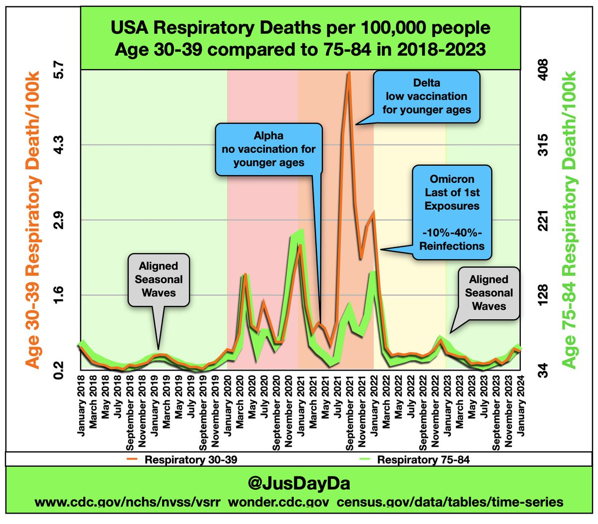
I got monthly COVID deaths by 5-year age groups from CDC WONDER: https://wonder.cdc.gov/mcd-icd10-provisional.html. In section 1 I set "Group Results By" to Month" and "Five-Year Age Groups", in section 6 I selected *U07.1 as the underlying cause of death, and in section 8 I checked "Export Results" and "Show Zero Values".
My heatmap below shows that compared to the winter 2020-2021 wave, the Omicron wave also seems to have killed a disproportionate number of young people, which might be because young people were less likely to be vaccinated than old people.
Each row has its own color scheme where the maximum value is black and zero is white. If you look at the colors of the squares during the summer 2020 wave, ages 60-69 have a higher color than older age groups, even though people were not yet vaccinated in summer 2020. However it could be because seasonal variation in mortality is greater in older age groups, so maybe older age groups also have more COVID deaths in winter relative to summer. But what complicates things further is that during the summer 2022 wave, older age groups again have a higher color than younger age groups.

t=readLines("Provisional Mortality Statistics, 2018 through Last Week.txt")
t=paste(t[1:(which(t=="\"---\"")[1]-1)],collapse="\n")
t=read.table(sep="\t",text=t,header=T)
t=t[t$Month.Code>="2020/02",]
t=t[t$Five.Year.Age.Groups!="Not Stated",]
m=tapply(t$Deaths,t[,c("Five.Year.Age.Groups","Month.Code")],c)
m=m[order(as.numeric(sub("\\W.*","",sub("< 1 year",0,rownames(m))))),]
m=cbind(m,Total=rowSums(m,na.rm=T))
m=rbind(m,Total=colSums(m,na.rm=T))
kimi=\(x){e=floor(log10(ifelse(x==0,1,abs(x))));e2=pmax(e,0)%/%3+1;p=!is.na(x)&x!=0;x[p]=paste0(sprintf(paste0("%.",ifelse(e[p]%%3==0,1,0),"f"),x[p]/1e3^(e2[p]-1)),c("","k","M","B","T")[e2[p]]);x}
disp=kimi(m)
m=m/apply(m[,1:(ncol(m)-1)],1,max,na.rm=T)
pheatmap::pheatmap(m,filename="0.png",display_numbers=disp,
cluster_rows=F,cluster_cols=F,legend=F,border_color=NA,
cellwidth=20,cellheight=20,fontsize=9,fontsize_number=8,na_col="white",
number_color=ifelse(m>.8,"white","black"),
breaks=seq(0,1,,256),
colorRampPalette(colorspace::hex(colorspace::HSV(c(210,210,210,160,110,60,30,0,0,0),c(0,.25,rep(.5,8)),c(rep(1,8),.5,0))))(256))
system("w=`identify -format %w 0.png`;convert 0.png -gravity northwest \\( -splice x20 -size $[$w-60]x -pointsize 40 caption:'CDC WONDER: Monthly deaths with underlying cause of death *U07.1 (COVID-19). CDC WONDER suppresses the number of deaths on rows with 1-9 deaths but not on rows with zero deaths. The total column does not include suppressed deaths. Each row has its own color scale where the maximum value is black and the minimum value is white.' -extent $[w-60]x -gravity center \\) +swap -append +repage 1.png")
Kirsch posted this tweet which showed that 4 out of the 5 biggest counties in Georgia had higher excess mortality in 2021 than 2020: [https://twitter.com/stkirsch/status/1751828835405082658]

However the excess mortality for 2020 includes the period before COVID in January and February (even though Georgia was one of the southern states which already had fairly high excess mortality in March).
The spikes in excess deaths also coincided with spikes in PCR positivity rate, and there was low excess mortality around April 2021 when vaccine doses peaked:

Beaudoin posted this tweet: [https://twitter.com/Coquin_de_Chien/status/1727583296668713020]
Here is 1 of 150 pages of graphs from The CDC Memorandum.
However his plots had a total of 16 deaths so maybe the increase in 2022 could've been due to chance. In the US as a whole in 2022, there's not that many excess deaths with an underlying cause of death C96.9 ("Malignant neoplasm of lymphoid, hematopoietic and related tissue, unspecified"). And actually if I would've used a polynomial baseline here, then the excess deaths would've been close to zero:

Beaudoin also posted this tweet:
Nothing to see here.
Move along.
Don't tell anyone.
Keep it quiet so we can sell more vx's.
However Beaudoin's plot only includes data back to 2015 so it's not that clear that there was an increasing trend in C41 deaths before COVID. When I looked at deaths in the US as a whole and I used a 2015-2019 linear baseline, I got negative excess mortality in 2021-2023 for the underlying cause of death C41 ("Malignant neoplasm of lymphoid, hematopoietic and related tissue, unspecified"):

library(ggplot2)
t=data.frame(year=1999:2023)
t$dead=c(71,85,78,57,47,54,43,47,42,50,45,43,62,59,65,66,74,75,82,88,106,118,126,144,152)
trend=lm(dead~year,t|>subset(year>=2015&year<=2019))
t$trend=predict(trend,t)
t$poly=lm(dead~poly(year,2),t|>subset(year>=1999&year<=2019))|>predict(t)
t$excess=t$dead-t$trend
t$polyexcess=t$dead-t$poly
xy=data.frame(x=t$year,y=t$dead,z="Deaths")
xy=rbind(xy,data.frame(x=t$year,y=t$trend,z="Linear trend (2015-2019)"))
xy=rbind(xy,data.frame(x=t$year,y=t$excess,z="Excess deaths relative to linear trend"))
xy$z=factor(xy$z,unique(xy$z))
xstart=min(xy$x);xend=max(xy$x)
cand=c(sapply(c(1,2,5),\(x)x*10^c(-10:10)))
ystep=cand[which.min(abs(cand-(max(xy$y)-min(xy$y))/6))]
ystart=ystep*floor(min(xy$y,na.rm=T)/ystep)
yend=ystep*ceiling(max(xy$y,na.rm=T)/ystep)
xlab=c(rbind("",unique(xy$x)),"")
xbreak=seq(xstart-.5,xend+.5,.5)
color=c("black","gray50",hcl(225,80,40))
yheight=(yend-ystart)/15
labels=data.frame(x=xstart+.001*(xend-xstart),y=seq(yend-yheight,,-yheight,nlevels(xy$z)),label=levels(xy$z))
tit="Yearly deaths in United States with underlying cause of death C96.9 (\"Malignant neoplasm of lymphoid, hematopoietic and related tissue, unspecified\"). Data from wonder.cdc.gov/mcd.html. The data was downloaded in February 2024 so some deaths in 2023 are still missing because of a registration delay."|>stringr::str_wrap(90)
lab=na.omit(data.frame(xy,label=ifelse(!grepl("Linear",xy$z)&xy$x>=2015,round(xy$y),NA)))
ggplot(xy,aes(x,y,color=z))+
geom_hline(yintercept=c(ystart,0,yend),color="gray65",linewidth=.25)+
geom_vline(xintercept=c(xstart-.5,xend+.5,c(2019.5,2014.5)),color="gray65",linewidth=.25)+
geom_line(aes(color=z),linewidth=.3)+
geom_label(data=lab,aes(color=z,label=label),size=1.8,fill=alpha("white",.7),label.r=unit(0,"lines"),label.padding=unit(.0,"lines"),label.size=0)+
geom_text(data=lab,size=1.8,aes(color=z,label=label))+
geom_label(data=labels,aes(x=x,y=y,label=label),fill=alpha("white",.7),label.r=unit(0,"lines"),label.padding=unit(.04,"lines"),label.size=0,color=color[1:nrow(labels)],size=2.6,hjust=0)+
labs(title=tit,x=NULL,y=NULL)+
coord_cartesian(clip="off",expand=F)+
scale_x_continuous(limits=c(xstart-.5,xend+.5),breaks=xbreak,labels=xlab)+
scale_y_continuous(limits=c(ystart,yend),breaks=seq(ystart,yend,ystep))+
scale_color_manual(values=color)+
theme(axis.text=element_text(size=6.5,color="black"),
axis.text.x=element_text(angle=90,vjust=.5,hjust=1),
axis.ticks=element_line(linewidth=.25,color="gray65"),
axis.ticks.x=element_line(color=alpha("gray65",c(1,0))),
axis.ticks.length=unit(.15,"lines"),
axis.title=element_text(size=8),
legend.position="none",
panel.background=element_rect(fill="white"),
panel.grid=element_blank(),
plot.background=element_rect(fill="white"),
plot.margin=margin(.4,.65,.5,.4,"lines"),
plot.caption=element_text(size=6,hjust=0,margin=margin(.6,0,0,0,"lines")),
plot.title=element_text(size=7))
ggsave("1.png",width=4.6,height=3.3)
Tore Aarhus Gulbrandsen posted these tweets: [https://twitter.com/saunasauen/status/1766339791753196004]
It appears that EuroMOMO is now part of the white-washing of excess mortality, perhaps unknowingly.
In mid 2022 the EuroMOMO graph for Finland showed repeatedly high values for the period 2021-06 to 2022-06, with only a few weeks below the zero-line.
Today's graph shows the period as rather normal, with many weeks below the zero-line in the same time frame.
"Oceania had always been at war with Eurasia."
However in a bulletin for week 21 of 2023, EUROMOMO announced that they started including data from spring 2023 onwards in their baseline calculation: [https://www.euromomo.eu/bulletins/2023-21]
After a long period with elevated overall European mortality through the COVID-19 pandemic, the European mortality (both totally for the entire population and in all age groups) is by spring 2023 within the expected level. Therefore, data from spring 2023 and onwards will be included in the estimations of the expected mortality. During the pandemic years, the usual patterns of mortality have been disrupted because of the unexpected and varying excess mortality experienced due to the COVID-19 pandemic. This means that the assumption that there is no elevated mortality in certain weeks in spring (week 16-25) and autumn (week 37-44) did not hold. Therefore, to avoid biasing the estimations of the expected mortality, data from the pandemic years (2020-2022) were excluded from the estimations of the expected mortality. Normally, the estimation of the expected mortality is based on data from a five-year period. However, when data from the three pandemic years are excluded from the estimations, the oldest data currently used is up to 8 years old. This means that until 2028, both data from the pre- and post-COVID-19 pandemic periods will be included in the estimations of the expected mortality.
Clare Craig posted this plot which appears to show that in US counties which had a higher percentage of vaccinated people in 2022, the 2021 mortality rate minus 2020 mortality rate tended to be higher than in counties with a lower percentage of vaccinated people: [https://twitter.com/ClareCraigPath/status/1771230708511449587]

However actually her plot shows the mortality rate in 2020 minus the mortality rate in 2021. With 2021 minus 2020 I got the opposite trend:

In Craig's plot the county which had about 9% vaccinated people was Long County, Georgia, which had a higher mortality rate in 2021 than 2020 on CDC Wonder, so it should've been above zero on the y-axis in her plot. This plot also shows that the county with about 9% vaccinated people had a higher mortality rate in 2021 than 2020: [https://twitter.com/ClareCraigPath/status/1771167720634978639]

Craig also posted this tweet where she used the same CDC dataset for vaccinations by county, but she plotted the Completeness_pct column and not the Administered_Dose1_Pop_Pct column: [https://twitter.com/ClareCraigPath/status/1771154704992465029]

It's not clear why there's such a drastic difference between the two columns (or why the values of the Completeness_pct column seem to fall to a certain fixed set of values where other values in between are omitted):
> vax=fread("COVID-19_Vaccinations_in_the_United_States_County_20240227.csv")
> d=vax[Date=="01/01/2022",]
> table(round(d$Completeness_pct))
0 60 74 81 86 90 91 93 94 95 96 97 98 99
26 160 15 125 4 185 122 122 473 88 305 591 533 528
> table(round(d$Administered_Dose1_Pop_Pct))
0 10 14 15 16 17 18 19 20 21 22 23 24 25 26 27 28
152 1 2 3 6 11 8 5 6 6 9 11 9 9 9 15 6
29 30 31 32 33 34 35 36 37 38 39 40 41 42 43 44 45
7 8 7 10 9 12 22 32 26 44 50 59 65 76 56 90 67
46 47 48 49 50 51 52 53 54 55 56 57 58 59 60 61 62
106 75 101 68 108 84 103 83 120 93 93 70 89 75 97 70 68
63 64 65 66 67 68 69 70 71 72 73 74 75 76 77 78 79
56 70 52 52 39 48 32 42 37 36 17 30 25 23 27 28 18
80 81 82 83 84 85 86 87 88 89 90 91 92 93 94 95
21 18 22 20 9 18 17 10 12 10 10 2 12 5 7 38
The Completeness_pct column is described like this: "Represents the proportion of people with a completed primary series whose Federal Information Processing Standards (FIPS) code is reported and matches a valid county FIPS code in the jurisdiction." [https://data.cdc.gov/Vaccinations/COVID-19-Vaccinations-in-the-United-States-County/8xkx-amqh/about_data] And the Administered_Dose1_Pop_Pct column is described as the "Percent of Total Pop with at least one Dose by State of Residence".
In March 2024, Martin Neil, Norman Fenton, and Scott McLachlan published a preprint titled "The extent and impact of vaccine status miscategorisation on covid-19 vaccine efficacy studies". [https://www.medrxiv.org/content/10.1101/2024.03.09.24304015v1.full.pdf] The abstract said: "Systematic review identified thirty-nine studies that suffered from one particular and serious form of bias called miscategorisation bias, whereby study participants who have been vaccinated are categorised as unvaccinated up to and until some arbitrarily defined time after vaccination occurred. Simulation demonstrates that this miscategorisation bias artificially boosts vaccine efficacy and infection rates even when a vaccine has zero or negative efficacy. Furthermore, simulation demonstrates that repeated boosters, given every few months, are needed to maintain this misleading impression of efficacy. Given this, any claims of Covid-19 vaccine efficacy based on these studies are likely to be a statistical illusion."
Note how they relied on a simulation to demonstrate that the cheap trick would increase vaccine efficacy.
The methodology they used to do the simulations was poorly described, because for example they didn't mention that they only applied the cheap trick to the numerator but not to the denominator, and they didn't explain which number of new vaccine doses they simulated on each day or week of the simulation. And they didn't even explain why unvaccinated people only had one line in their plots, even though there should've been three different lines that would've corresponded to the three lines for vaccinated people. And at first I even thought that the weeks in their simulation were weeks since vaccination, but actually they were weeks of the simulation instead:

For example in scenario A, the vaccine was supposed to be a placebo which had no effect on the infection rate, and all people had a 1% constant infection rate regardless of whether they were vaccinated or not. So I thought that even if people would be classified as unvaccinated for the first 1 to 3 weeks after vaccination, both unvaccinated and vaccinated people should still have a constant infection rate of 1%. But I only understood how the model worked after Uncle John Returns posted this tweet: [https://x.com/UncleJo46902375/status/1770085722550133215]
I've simulated Fenton's simulation. I've only shown the 1 week unvaccinated line (to hit 1% in week 7). You can get almost any shape you like by adjusting the vaccinations per week. Curves smoothed by Excel.
I reproduced Uncle John's plot, but I didn't add the smoothing, and I also added lines for unvaccinated people in the scenarios where people were considered as unvaccinated for 2 or 3 weeks after vaccination:

library(ggplot2)
weeks=11
vax=cumsum(c(10,190,360,200,70,20,rep(0,5)))
lv=c("No lag","1 week","2 weeks","3 weeks")
lag=factor(rep(lv,each=weeks),lv)
lagged=embed(c(rep(0,3),vax),4)
xy=data.frame(x=1:weeks,y=c(1000-lagged)/c(1000-vax),lag,status="Unvaccinated")
xy=rbind(xy,data.frame(x=1:weeks,y=c(lagged)/vax,lag,status="Vaccinated"))
# xy=data.frame(x=1:weeks,y=1,lag,status="Unvaccinated")
# xy=rbind(xy,data.frame(x=1:weeks,y=1,lag,status="Vaccinated"))
xstart=1;xend=weeks;ystart=0;yend=5
pal=c("black",hcl(c(200,250,330)+15,100,50))
ggplot(xy,aes(x,y))+
geom_hline(yintercept=c(ystart,yend),linewidth=.3,lineend="square")+
geom_vline(xintercept=c(xstart,xend),linewidth=.3,lineend="square")+
geom_line(aes(color=lag,linetype=status),linewidth=.4)+
# annotate(geom="label",fill=alpha("white",.8),x=1.24,y=3,hjust=0,vjust=.5,label=paste0("All lines have a constant 1% infection rate if people who are classified as unvaccinated because of the cheap trick are also added to the unvaccinated population size and not only to unvaccinated cases.")|fw(30),size=2.3,label.r=unit(0,"lines"),label.padding=unit(.4,"lines"),label.size=.3,lineheight=1.1)+
# labs(title="Reproduction of Neil and Fenton's scenario A (corrected version where people who are classified as unvaccinated because of the cheap trick are added to both unvaccinated cases and unvaccinated population size)"|>stringr::str_wrap(52),x="Week of simulation",y="Infection rate")+
labs(title="Reproduction of Neil and Fenton's scenario A (original version where people who are classified as unvaccinated because of the cheap trick are only added to unvaccinated cases but not to unvaccinated population size)"|>stringr::str_wrap(52),x="Week of simulation",y="Infection rate")+
scale_x_continuous(limits=c(xstart,xend),breaks=seq(xstart,xend))+
scale_y_continuous(limits=c(ystart,yend),breaks=seq(ystart,yend),labels=\(x)paste0(x,"%"))+
coord_cartesian(clip="off",expand=F)+
scale_color_manual(values=pal)+
guides(linetype=guide_legend(title="Status"),color=guide_legend(title="Cheap trick lag"))+
theme(axis.text=element_text(size=7,color="black"),
axis.ticks=element_blank(),
axis.ticks.length=unit(0,"lines"),
axis.title=element_text(size=8),
legend.background=element_blank(),
legend.box.background=element_rect(fill=alpha("white",.85),color="black",linewidth=.3),
legend.box.just="center",
legend.direction="vertical",
legend.justification=c(1,1),
legend.key=element_rect(fill=alpha("white",0)),
legend.key.size=unit(.8,"lines"),
legend.margin=margin(.3,.4,.3,.4,"lines"),
legend.position=c(1,1),
legend.spacing.x=unit(.15,"lines"),
legend.spacing.y=unit(-.2,"lines"),
legend.text=element_text(size=7,vjust=.5),
legend.title=element_text(size=8,margin=margin(0,0,.8,0,"lines")),
panel.background=element_rect(fill="white"),
panel.grid.major=element_line(linewidth=.3,color="gray88"),
plot.margin=margin(.5,.7,.3,.4,"lines"),
plot.title=element_text(size=7.5,margin=margin(.2,0,.4,0,"lines")))
ggsave("1.png",width=3,height=3,dpi=450)
Later I found out that in 2023 Neil and Fenton had published a Substack post where they described their simulation procedure in more detail. And they even included a table similar to the table that Uncle John made, which made it clear that they only applied the cheap trick to the numerator but not to the denominator: [https://wherearethenumbers.substack.com/p/the-illusion-of-vaccine-efficacy]

They could've also included a similar table in their new preprint to make their methodology more clear.
People in Substack comments rarely address any specific details related to the topic of the post, and even if the author makes some obvious error, it's rare for people in the comments to mention it (or if they do then they just get banned like me). But this time several people in the comment section were wondering why the cheap trick was not also applied to the denominator in the models, and people were asking Neil and Fenton to cite any actual study which would've worked like their models so that the cheap trick was only applied to the numerator but not the denominator:

Neil and Fenton failed to cite any actual study which would've worked like their simulation, but they their response was to just add this comment to their Substack post:
6 May 2023 Update: Quite a few people have asked why we are including those vaccinated within the last 21 days in the 'total vaccinated' denominator for the vaccinated infection rate if such people are classified as unvaccinated. The answer is that, while those infected within 21 days are classified as unvaccined in observational trials, those who are not infected are generally treated as vaccinated. In observational studies, which is what we are simulating here, there is no pre-defined vaccine and control group as there would be in a controlled trial. And, unlike a controlled trial, people are getting vaccinated at different times. Hence, everything is driven by looking at 'cases' i.e. those defined to have been infected in any given week; all those infected within 21 days of a vaccination are classified as unvaccinated. However, for the efficacy calculation at any time, for the 'denominators' they simply use the total number of people vaccinated so far (e.g. from NIMS) and for this, there is generally no '21 day delay'.
Even though YouTube comments are not usually posted by the sharpest kind of people, even people in Fenton's YouTube comments were saying that his simulation was fishy: [https://www.youtube.com/watch?v=Gkh6N-ZL3_k]

In the old Substack post where Fenton and Neil described their simulation procedure in more detail, even people in their comment section were able to tell that it was BS, so I wonder if that's why they didn't include a proper description of their simulation procedure in their new preprint.
In any case Neil and Fenton knew that their method of doing the simulations was controversial, so they could've mentioned in their preprint that there would also be an alternative way to perform the simulations where the 1-to-3-week delay is also applied to the denominator, and that they were not sure which method was used in the real studies they listed in their paper.
I posted the Dutch CBS data here: f/dutch_cbs_aukema.csv. I combined the CSV files from sections 3.3.1 to 3.3.8 here: https://www.cbs.nl/nl-nl/longread/rapportages/2024/covid-vaccinatiestatus-en-sterfte/3-resultaten.
I didn't include the confidence intervals, because there's a bug on the website of the CBS where it doesn't include decimal separators for the upper end of the CI, so if for example the upper end of the CI is listed as 149, you can't tell if it's supposed to be 149 or 14.9 or 1.49.
Wouter Aukema also made this spreadsheet where he combined the same CSV files: https://docs.google.com/spreadsheets/d/1PSoPZ2Ugzm9bmhTYIIG1DYopMXbvHtevFeCZ_zPWT0o.
Denis Rancourt posted this tweet: [https://twitter.com/denisrancourt/status/1772434188223824079]
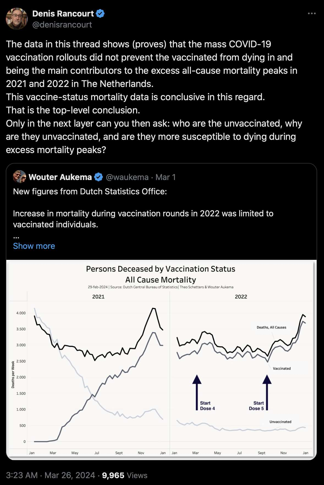
However the spike in December 2022 probably wasn't even caused by COVID, because the Dutch CBS data has a low number of COVID deaths in December 2022:
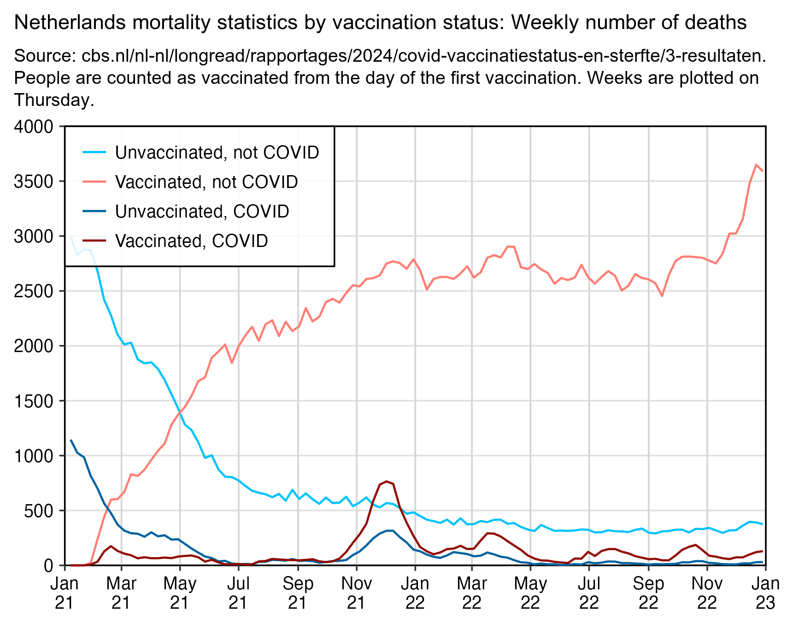
library(ggplot2)
t=read.csv("http://sars2.net/f/dutch_cbs_aukema.csv")
t=t[!grepl("ully",t$status),]
xy=aggregate(t[,4,drop=F],list(x=as.Date(t$week_ending)-3,z=paste0(t$status,ifelse(t$covid,", COVID",", not COVID"))),sum)
xy$z=factor(xy$z,paste0(rep(c("Unvaccinated","Vaccinated"),2),rep(c(", not COVID",", COVID"),each=2)))
colnames(xy)[3]="y"
xstart=as.Date("2021-1-1");xend=as.Date("2023-1-1")
xbreak=seq(xstart,xend,"2 month")
cand=c(sapply(c(1,2,5),\(x)x*10^c(-10:10)))
ystep=cand[which.min(abs(cand-(max(xy$y,na.rm=T)-min(xy$y,na.rm=T))/6))]
ystart=ystep*floor(min(xy$y,na.rm=T)/ystep)
yend=ystep*ceiling(max(xy$y,na.rm=T)/ystep)
ybreak=seq(ystart,yend,ystep)
color=c(hcl(c(210,0)+15,110,70),hcl(c(210,0)+15,100,30))
ggplot(xy,aes(x=x,y=y))+
geom_vline(xintercept=xbreak,linewidth=.3,lineend="square",color="gray84")+
geom_vline(xintercept=c(xstart,xend),linewidth=.3,lineend="square")+
geom_hline(yintercept=c(ystart,yend),linewidth=.3,lineend="square")+
geom_line(aes(color=z),linewidth=.4)+
labs(x=NULL,y=NULL)+
scale_x_date(limits=c(xstart,xend),breaks=xbreak,date_labels="%b\n%y")+
scale_y_continuous(limits=c(ystart,yend),breaks=ybreak)+
scale_color_manual(values=color)+
coord_cartesian(clip="off",expand=F)+
theme(axis.text=element_text(size=7,color="black"),
axis.ticks=element_line(linewidth=.3),
axis.ticks.length=unit(.15,"lines"),
axis.title=element_text(size=8),
legend.background=element_blank(),
legend.box.background=element_rect(fill=alpha("white",.85),color="black",linewidth=.3),
legend.box.just="center",
legend.direction="vertical",
legend.justification=c(0,1),
legend.key=element_rect(fill=alpha("white",0)),
legend.key.size=unit(.8,"lines"),
legend.margin=margin(.5,.4,.3,.4,"lines"),
legend.position=c(0,1),
legend.spacing.x=unit(.15,"lines"),
legend.spacing.y=unit(-.2,"lines"),
legend.text=element_text(size=7,vjust=.5),
legend.title=element_blank(),
panel.background=element_rect(fill="white"),
panel.grid.major=element_line(linewidth=.3,color="gray88"),
plot.margin=margin(.5,.7,.3,.4,"lines"),
plot.title=element_text(size=7.5,margin=margin(.2,0,.4,0,"lines")))
ggsave("0.png",width=4.3,height=2.8,dpi=400)
system("f=0.png;mogrify -trim $f;w=`identify -format %w $f`;convert -gravity northwest -splice x0 -size $[w]x -pointsize 45 -font /Library/Fonts/Arial\\ Unicode.ttf -interline-spacing -5 caption:'Netherlands mortality statistics by vaccination status: Weekly number of deaths' -pointsize 39 caption:'Source: cbs.nl/nl-nl/longread/rapportages/2024/covid-vaccinatiestatus-en-sterfte/3-resultaten. People are counted as vaccinated from the day of the first vaccination. Weeks are plotted on Thursday.' -gravity south -splice x20 $f -append -trim -bordercolor white -border 30 +repage 1.png")
In winter 2021-2022 COVID deaths peaked on the week ending December 5th 2021, but even then COVID deaths accounted for only about 25% of all deaths in the Dutch CBS data:
> t=read.csv("http://sars2.net/f/dutch_cbs_aukema.csv")
> t=t[!grepl("ully",t$status)&t$week_ending=="2021-12-05",]
> m=tapply(t$deaths,list(ifelse(t$covid,"COVID","not COVID"),t$status),sum)
> m=cbind(m,total=rowSums(m))
> rbind(m,"COVID pct"=round(m[1,]/colSums(m)*100))
Unvaccinated Vaccinated total
COVID 315 765 1080
not COVID 568 2750 3318
COVID pct 36 22 25
The plot below shows that compared to the number of deaths in January 2022, the spike in all-cause deaths in December 2021 was a lot higher in unvaccinated people than vaccinated people. (The unvaccinated population size gets smaller over time as more people get vaccinated, but only a small number of people got their first vaccine dose between the start of December 2021 and the end of January 2022.)
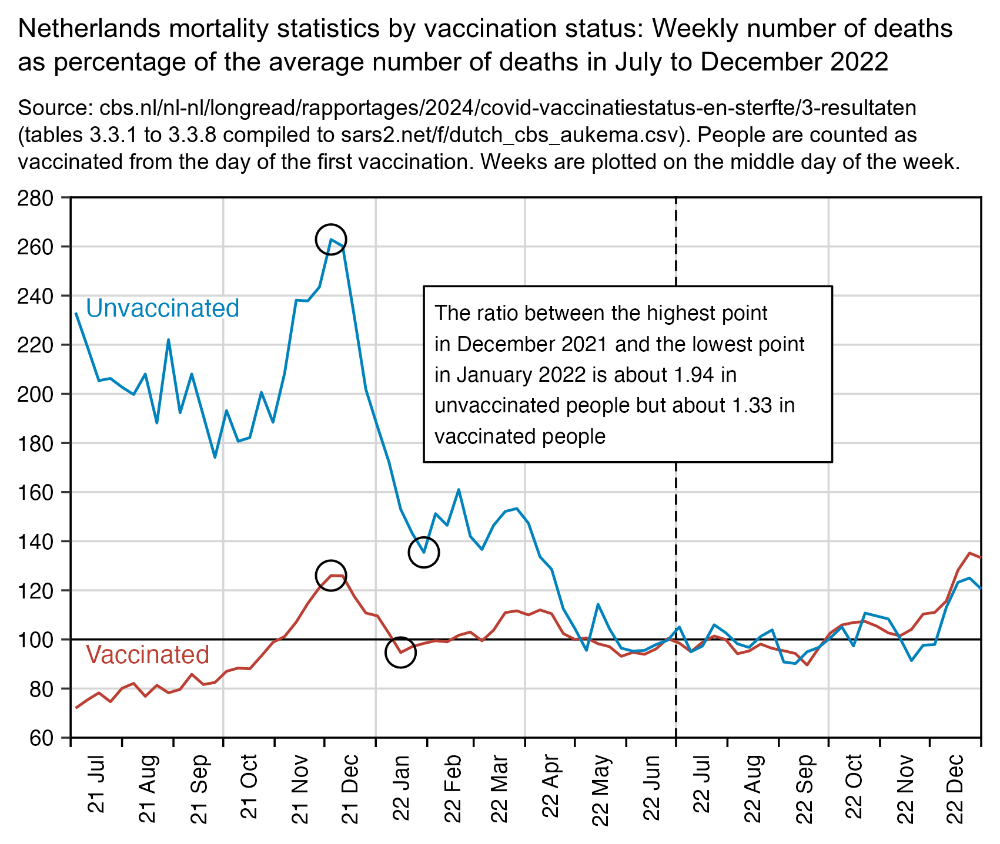
Vaccinated people have lower non-COVID ASMR than unvaccinated people because of the healthy vaccinee effect, but you can adjust for it if you divide COVID ASMR by all-cause ASMR. But even then the ratio in unvaccinated people is much higher during the COVID wave in December 2021:
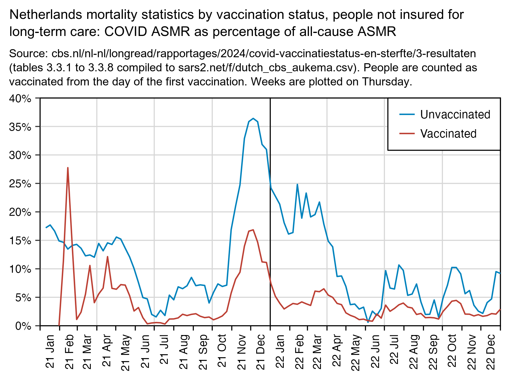
The Netherlands had a high number of influenza cases in December 2022, which might explain why there was a high number of deaths even though there was a low number of COVID deaths: [https://app.powerbi.com/view?r=eyJrIjoiYWU4YjUyN2YtMDBkOC00MGI1LTlhN2UtZGE5NThjY2E1ZThhIiwidCI6ImY2MTBjMGI3LWJkMjQtNGIzOS04MTBiLTNkYzI4MGFmYjU5MCIsImMiOjh9]
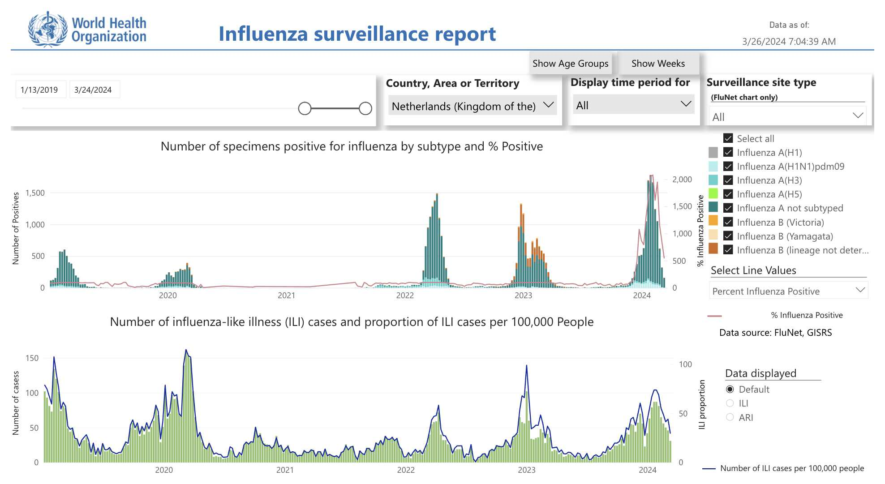
Germany also had a spike in all-cause mortality in December 2022 which coincided with a spike in influenza-like illness even though there was a low number of COVID deaths:
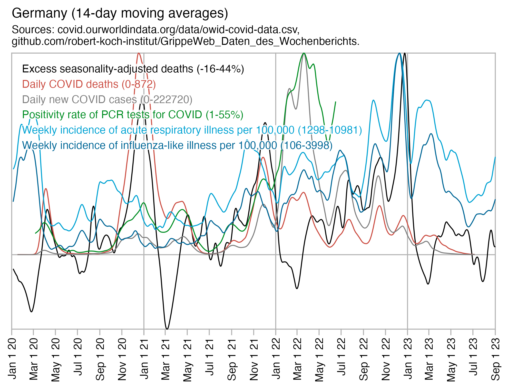
Even though adding together ratios is not correct in many cases, in the case of this dataset the denominators for COVID and non-COVID ASMR are the same, so it's possible to calculate all-cause ASMR by adding together COVID and non-COVID ASMR like in this example:
> stdpop=c(70000,30000) > t=read.table(header=T,text=" + age pop dead_covid dead_non_covid + 0-49 2345 3 28 + 50+ 1234 11 98") > asmr_covid=sum(t$dead_covid/t$pop*stdpop) > asmr_noncovid=sum(t$dead_non_covid/t$pop*stdpop) > asmr_total=sum(rowSums(t[,3:4])/t$pop*stdpop) > asmr_covid+asmr_noncovid [1] 3575.292 > asmr_total [1] 3575.292
So if you calculate all-cause ASMR by adding together COVID and non-COVID ASMR, it's much higher in unvaccinated people than vaccinated people, even though the difference gets smaller over time which is probably because the impact of the temporal healthy vaccinee effect gets weaker:
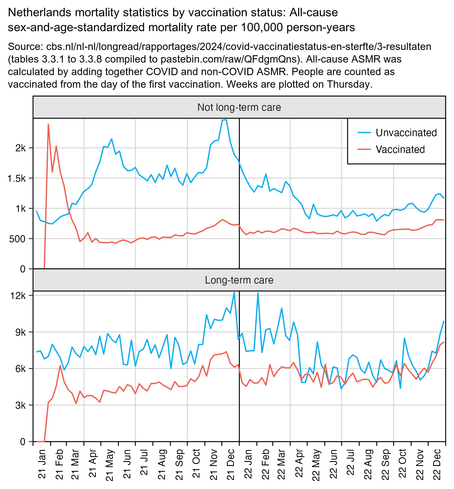
Netherlands is a bad country for calculating a Rancourtian correlation between all-cause mortality and new vaccine doses given, because the first two doses were rolled out between COVID waves when there was low excess mortality. And the first booster was also given earlier than in other countries where it happened to coincide with the Omicron wave, and for some reason Netherlands had a almost no deaths during the Omicron wave even though the number of cases and PCR positivity were high. So unlike many other countries, Netherlands didn't have a spike in deaths in January 2022 which would've coincided with the rollout of the first booster. Now there's minor bumps in all-cause mortality which coincide with the rollout of the 4th and 5th doses, but if the 4th and 5th doses were killing a bunch of people then why wasn't there also an increase in all-cause mortality when the first three doses were rolled out?
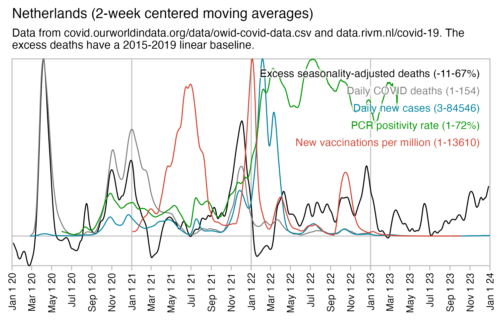
Aukema also posted the plot below which shows that vaccinated people accounted for about 82% of COVID deaths. [https://twitter.com/waukema/status/1763512462412845432] However according to the ECDC's vaccine tracker, about 96% of the Dutch population of ages 60 and above had been vacccinated by December 2021, and after that the percentage remained at 96.3% until 2023. [https://vaccinetracker.ecdc.europa.eu/public/extensions/COVID-19/vaccine-tracker.html#uptake-tab] The percentage might be too high, because in other countries the percentage of vaccinated people in elderly age groups sometimes reaches over 100% (and for example in New Zealand similar statistics were based on the Health Service User population where unvaccinated people are underrepresented, because many people who were not previously included in the population were added to it after they got vaccinated). But anyway, in the elderly age groups which account for most deaths, the percentage of vaccinated people is still probably much higher than 82%.
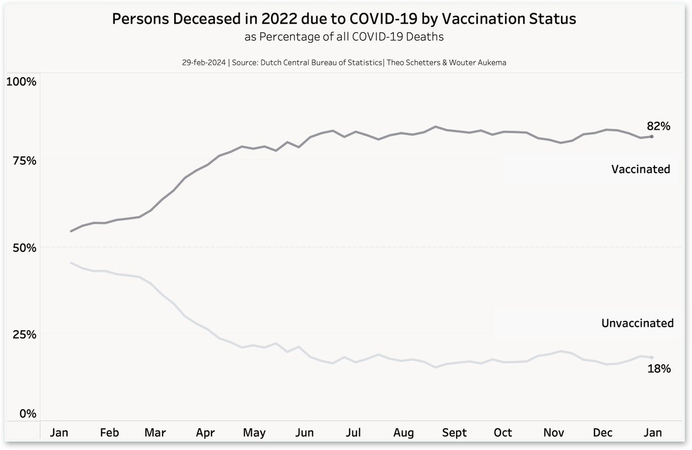
The heatmap below shows that in February 2021 among people who had not been insured for long-term care, vaccinated people had about twice as high ASMR as unvaccinated people, which might be because vulnerable groups of people were priorized during the early vaccine rollout. However after that unvaccinated people had higher ASMR than unvaccinated people almost every month, regardless of whether you look at COVID deaths or non-COVID deaths or if you look at people in long-term care or not. Among people who had not been insured for long-term care, there were many months when unvaccinated people had over 10 times higher COVID ASMR than vaccinated people. The last row of the bottom heatmap shows that among people in long-term care, vaccinated people initially had over 50% higher non-COVID mortality than unvaccinated people (which was probably because of the healthy vaccinee effect), but the difference had reached close to zero by the end of 2022:
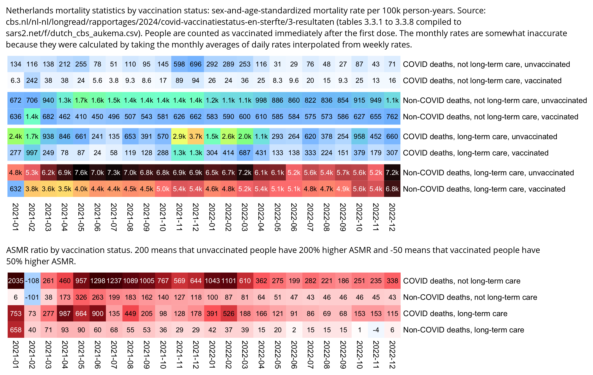
t=read.csv("http://sars2.net/f/dutch_cbs_aukema.csv")
t=t[!grepl("ull",t$status),]
t=t[order(t$long_term_care,!t$covid,t$status),]
g=paste0(ifelse(t$covid,"","Non-"),"COVID deaths, ",ifelse(t$long_term_care,"","not "),"long-term care, ",tolower(t$status))
d=data.frame(x=as.Date(t$week_ending)-3,y=t$asmr/7*365,z=factor(g,unique(g)))
r=do.call(rbind,lapply(split(d,g),\(x){
x=rbind(x,data.frame(x=as.Date(setdiff(min(d$x):max(d$x),d$x),"1970-1-1"),y=NA,z=x$z[1]))
x=x[order(x$x),]
x$y=zoo::na.approx(x$y)
aggregate(x$y,list(x=substr(x$x,1,7),z=x$z),mean)
}))
m=xtabs(r[,3]~r[,2]+r[,1])
disp=ifelse(m>=1e3,sprintf("%.1f",m/1e3),round(m))
m=m^.65
maxcolor=max(m)
pal=colorspace::hex(colorspace::HSV(c(210,210,210,160,110,60,30,0,0,0),c(0,.25,rep(.5,6),.7,.9),c(rep(1,8),.5,0)))
pheatmap::pheatmap(m,filename="i1.png",display_numbers=disp,
gaps_row=seq(2,8,2),
cluster_rows=F,cluster_cols=F,legend=F,cellwidth=19,cellheight=19,fontsize=9,fontsize_number=8,
border_color=NA,na_col="gray90",
number_color=ifelse(abs(m)>maxcolor*.8,"white","black"),
breaks=seq(0,maxcolor,,256),
colorRampPalette(pal)(256))
system("f=i1.png;w=`identify -format %w $f`;convert $f -gravity northwest \\( -splice x16 -size $[w-44]x -pointsize 40 caption:'Netherlands mortality statistics by vaccination status: sex-and-age-standardized mortality rate per 100k person-years. Source: cbs.nl/nl-nl/longread/rapportages/2024/covid-vaccinatiestatus-en-sterfte/3-resultaten (tables 3.3.1 to 3.3.8 compiled to sars2.net/f/dutch_cbs_aukema.cvs). People are counted as vaccinated immediately after the first dose. The monthly rates are somewhat inaccurate because they were calculated by taking the monthly averages of daily rates interpolated from weekly rates.' -extent $[w-44]x -gravity center \\) +swap -append -bordercolor white -border 6 +repage l1.png")
rat=\(x,y)(x-y)/ifelse(x>y,y,x)
m2=rat(m[seq(1,7,2),],m[seq(2,8,2),])*100
rownames(m2)=sub(", unvaccinated","",rownames(m2))
disp2=ifelse(m2>1e4,sprintf("%.1fk",m2/1e3),round(m2))
exp2=.6
m2=abs(m2)^exp2*sign(m2)
maxcolor2=1300^exp2
pal2=colorspace::hex(colorspace::HSV(c(210,210,210,210,0,0,0,0,0),c(1,.8,.6,.3,0,.3,.6,.8,1),c(.3,.65,1,1,1,1,1,.65,.3)))
pheatmap::pheatmap(m2,filename="i2.png",display_numbers=disp2,
cluster_rows=F,cluster_cols=F,legend=F,cellwidth=19,cellheight=19,fontsize=9,fontsize_number=8,
border_color=NA,na_col="gray90",
number_color=ifelse(abs(m2)>maxcolor2*.6,"white","black"),
breaks=seq(-maxcolor2,maxcolor2,,256),
colorRampPalette(pal2)(256))
system("f=i2.png;w=`identify -format %w $f`;convert $f -gravity northwest \\( -splice x16 -size $[w-44]x -pointsize 40 caption:'ASMR ratio by vaccination status. 200 means that unvaccinated people have 200% higher ASMR and -50 means that vaccinated people have 50% higher ASMR.' -extent $[w-44]x -gravity center \\) +swap -append -bordercolor white -border 6 +repage l2.png")
system("montage -geometry +0+0 -tile 1x l[12].png 1.png")
In one plot Aukema double-counted deaths, so he had about 5000-7500 deaths per week even though it should've been half of that: [https://twitter.com/UncleJo46902375/status/1763550999916990885]
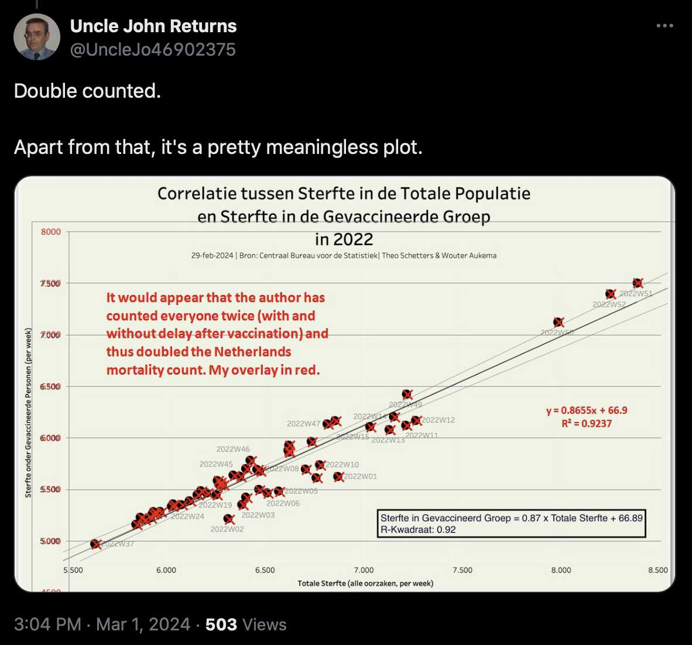
In the Dutch CBS dataset, there is one set of statistics where people are considered vaccinated immediately after vaccination, and there is another set of statistics where people are only considered as vaccinated after they are fully vaccinated (which generally means that at least two weeks had passed from the second dose): [https://www.cbs.nl/nl-nl/longread/rapportages/2024/covid-vaccinatiestatus-en-sterfte/2-methode]
Vaccination status 'vaccinated' is defined as 'fully vaccinated' (i.e. two weeks after two approved vaccinations, or a positive test at least 56 days for at least one approved vaccination, or four weeks after vaccination where, according to the vaccination certificate, one vaccination counts as fully vaccinated, or when a booster or repeat injection has been given without a known basic series) possible with boosters and repeat injections. Vaccination status 'unvaccinated' is defined as no known vaccination or only one known vaccination without previously reported infection (with the exception of the vaccine where one vaccination counted as fully vaccinated).
The plot below shows that in January and February 2021, unvaccinated people had a spike in deaths which was missing from people who were not fully vaccinated. It might be because vulnerable groups of people were priorized during the earliest part of the rollout (even though based on this data alone, I believe the possibility that some of the deaths were caused by the vaccines cannot be ruled out either):
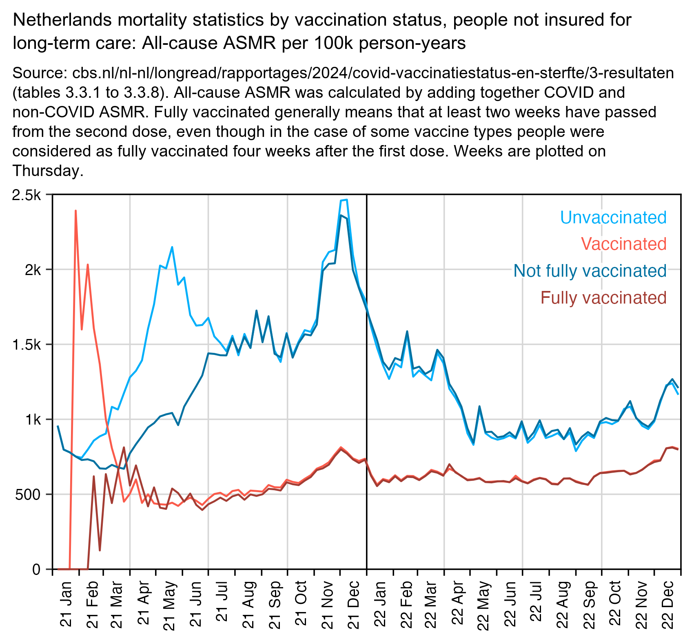
Actually fully vaccinated people have zero deaths until the week ending February 21st. The recommended minimum duration between the first and second dose was 3 weeks, so there was typically a delay of at least 5 weeks between the first vaccination and the time when a person was considered fully vaccinated.
The plot above also shows that during the first half of 2021 when there was still a fairly high number of new people getting vaccinated, unvaccinated people had much higher ASMR than people who were not fully vaccinated. It might be partially because of the temporal healthy vaccinee effect, where recently vaccinated people have a reduced number of deaths after vaccination, so conversely the people who remain unvaccinated have temporarily elevated mortality during the vaccine rollout. Or it could also be because the people who are not fully vaccinated include the group of people who received only one dose but not the second dose and the group of people who have recently received the second dose. In the ONS dataset for mortality by vaccination status, both of those groups of people had low mortality during the rollout of the first two doses (even though later on they had higher mortality but their population size was also much smaller) (R code):
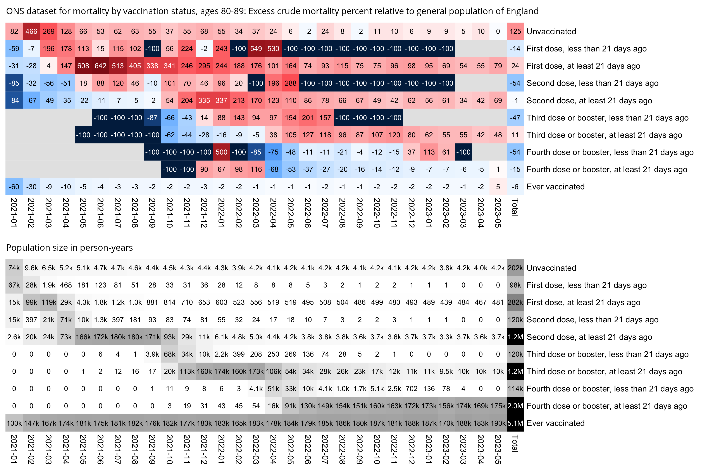
The final version of the ONS dataset for mortality by vaccination status was published in August 2023, and it included data up to May 2023. The reason why June and July were excluded was probably because they were still missing too many deaths because of a registration delay. In May it looked like the trend was that the unvaccinated ASMR was soon about to cross below the ever vaccinated ASMR: [https://twitter.com/mothrfunkr/status/1774625071140893040]

However I think it's because young people are more likely to be unvaccinated than older people, and younger people have a longer registration delay than older people, so during the last months with data available, there's a larger percentage of deaths missing in younger people which introduces a bias in favor of unvaccinated people.
In the July 2022 version, the last month of data included was May 2022, when unvaccinated people had only about 6% higher ASMR than vaccinated people, and it looked like the trend was that unvaccinated ASMR was soon about to cross below the vaccinated ASMR. But in the next release after more missing deaths were added, unvaccinated people now had about 22% higher ASMR than vaccinated people:

In the year 2021 in an ONS dataset titled "Impact of registration delays on mortality statistics", the proportion of deaths which had a registration delay of 3 months or longer was about 12% in ages 45-64 but only about 2% in ages 85 and over: [https://www.ons.gov.uk/peoplepopulationandcommunity/birthsdeathsandmarriages/deaths/articles/impactofregistrationdelaysonmortalitystatisticsinenglandandwales/2021]

The same Twitter user also wrote: "Based on my calculations, approx 80% of UK population received at least 1 Covid injection yet accounted for 98% of the deaths in May of 23 before ONS stopped recording and sharing that damning data." [https://twitter.com/mothrfunkr/status/1774601668270940390] However in the ONS dataset in May 2023, the percentage of unvaccinated people was about 2% in ages 70+, and ages 70+ accounted for about 82% of all deaths:
> t=read.csv("http://sars2.net/f/ons-table-2-2023-august.csv",na="<3")
> t=subset(t,cause=="All causes"&year==2023&month=="May")
> m=tapply(t$pop,list(t$age,t$status!="Unvaccinated"),sum)
> round(m[,1]/rowSums(m)*100,1) # unvaccinated percentage
18-39 40-49 50-59 60-69 70-79 80-89 90+
18.2 10.9 6.4 4.2 2.5 2.2 2.4
> tap=tapply(t$dead,t$age,sum,na.rm=T)
> tap # total deaths
18-39 40-49 50-59 60-69 70-79 80-89 90+
260 483 1652 3822 8499 12509 7898
> sum(tail(tap,3))/sum(tap)*100 # percentage of deaths in ages 70+ out of all deaths
[1] 82.29935
In February 2024 the UK ONS announced that they had changed the methodology they used to calculate excess mortality. [https://www.ons.gov.uk/peoplepopulationandcommunity/healthandsocialcare/causesofdeath/articles/estimatingexcessdeathsintheukmethodologychanges/february2024]
Previously they used a simple 5-year average where the year 2020 was excluded but the years 2021-2023 were not, so for example the baseline for the year 2023 was based on the years 2017-2019 and 2021-2022. However now they simply excluded a hardcoded set of months when COVID was listed as the underlying cause of death for at least 15% of all deaths, which were April and May 2020 and November 2020 to February 2021 (or weeks 14-22 of 2020 and week 45 of 2020 to week 8 of 2021 for weekly data).
A lot of people were saying that the new method inflated excess deaths because 2020 and later years were included in the fitting period of the baseline, but people didn't realize that the old method also included the years 2021-2023. The old 5-year average underestimated excess deaths because UK has an increasing trend in deaths because of the aging population, but the old method overestimated excess deaths relative to the prepandemic trend because 2021-2023 were included in the baseline fitting period. So the old method was inaccurate in two ways, which ended up partially canceling each other out starting from the year 2022 when 2021 started to be included in the baseline fitting period.
Clare Craig wrote: [https://www.hartgroup.org/too-many-deaths-are-to-be-expected/]
Figure 1: ONS expected deaths estimates showing smooth predictions of old methodology (black dotted line) compared to jumping estimates using modelling methodology (red line) and actual deaths (grey bars). Note y axis starts at 500,000The consequence of the crazy estimate their new model spits out is that a total of 110,000 more deaths were "expected" from 2016-2019 compared to their old model. It also means that 2019 went from having an excess of 3k deaths to a deficit of 36k. If 36,000 people who were "expected" to die in 2019 did not have their deaths registered, then surely that paints the excess in registrations in 2020 in a different light.
However UK has an increasing trend in deaths per year because of the aging population, so in the years 2012 to 2019, the number of deaths was always above the average of the past five years. But a linear trend of the past five years was a better approximation of actual deaths, because the 5-year average was lagging 3 years behind the trend:

The ONS article about the new baseline methodology was accompanied by a spreadsheet which shows monthly and weekly deaths in the years 2005 to 2023 by age, region, and sex. In the code below I calculated the yearly sum of deaths in England and Wales based on Table 2 of the spreadsheet. When I used the average of the five previous years as the baseline for each year, there was a total of 68,840 excess deaths in 2016 to 2019. But when I used a linear trend of the five previous years as the baseline for each year, there's a total of -29,476 excess deaths in 2016 to 2019 instead. So difference is about 100,000 deaths, which is similar to the difference between the new and old ONS method that was mentioned by Craig:
download.file("https://www.ons.gov.uk/file?uri=/peoplepopulationandcommunity/healthandsocialcare/causesofdeath/datasets/estimatingexcessdeathsintheukmethodologychanges/current/dataset20240220.xlsx","dataset20240220.xlsx")
t=as.data.frame(readxl::read_excel("dataset20240220.xlsx",skip=4,sheet=5))
t=t[t$Geography=="England and Wales, including non-residents",]
d=aggregate(list(dead=t$Death),list(year=t$Year),sum)
# # same as above
# d=data.frame(year=2005:2023)
# d$dead=c(512817,502405,503838,508906,491140,493062,484178,499145,506608,501243,529472,524866,533047,541568,530841,607922,586334,577377,581368)
d$linear=c(rep(NA,5),sapply(2010:2023,\(i)predict(lm(dead~year,d[d$year%in%(i-1:5),]),list(year=i))))
d$average=c(rep(NA,5),sapply(2010:2023,\(i)mean(d$dead[d$year%in%(i-1:5)])))
d$excess_linear=d$dead-d$linear
d$excess_average=d$dead-d$average
print.data.frame(round(na.omit(d)),row.names=F)
# year dead linear average excess_linear excess_average
# 2010 493062 492765 503821 297 -10759
# 2011 484178 490455 499870 -6277 -15692
# 2012 499145 479676 496225 19469 2920
# 2013 506608 487341 495286 19267 11322
# 2014 501243 505932 494827 -4689 6416
# 2015 529472 508485 496847 20987 32625
# 2016 524866 531935 504129 -7069 20737
# 2017 533047 534559 512267 -1512 20780
# 2018 541568 541998 519047 -430 22521
# 2019 530841 551307 526039 -20466 4802
# 2020 607922 537791 531959 70131 75963
# 2021 586334 596821 547649 -10487 38685
# 2022 577377 611821 559942 -34444 17435
# 2023 581368 606942 568808 -25574 12560
round(colSums(d[d$year%in%2016:2019,-1]))
# dead linear_trend average excess_linear excess_average
# 2130322 2159798 2061482 -29476 68840
Craig also pointed out that the new ONS method produced a similar expected number of deaths for 2020, 2021, and 2022: [https://twitter.com/ClareCraigPath/status/1778336819270074865]

The new method uses a 5-year trend calculated with a quasi-Poisson regression. There was a big drop in the baseline between 2019 and 2020, because the baseline for the year 2020 was based on the years 2015-2019, and there was a low number of deaths in 2019 and a high number of deaths in 2015, so the slope of the trend was too low. The slope of a 2015-2019 linear trend is also too flat relative to the actual long-term trend. OWID also uses a 2015-2019 linear trend for all countries, so it overestimates excess deaths in countries that had a low number of deaths in 2019, like UK and Sweden.
In the plot below, I think my green baseline is more accurate than the new method used by the ONS. I first calculated a linear trend in crude mortality rate within each 5-year age group in 2010-2019. Then I multiplied the projected trend by the population size of the age group to get the expected number of deaths for the age group, and I added together the expected number of deaths for all age groups to get the total expected deaths for a year. I used a fairly long fitting period for the baseline, so anomalous years like 2019 have less impact on my baseline than in the new ONS method. But compared to my green baseline, the new ONS baseline actually seems far too low in the years 2021 and 2022:

People were speculating that ONS adopted the new method of calculating the baseline in order to diminish the number of excess deaths caused by the vaccines. But my plot above shows that the new ONS baseline is likely far too low in the years 2021 and 2022, which would mean that it actually exaggerates excess deaths during the years when the most vaccines were given.
Here's R code for generating the plot above:
download.file("https://www.ons.gov.uk/file?uri=/peoplepopulationandcommunity/healthandsocialcare/causesofdeath/datasets/estimatingexcessdeathsintheukmethodologychanges/current/dataset20240220.xlsx","dataset20240220.xlsx")
t=as.data.frame(readxl::read_excel("dataset20240220.xlsx",skip=4,sheet=5))
t=t[t$Geography=="England and Wales, including non-residents",]
a=aggregate(list(dead=t$Death,pop=t$Pop),list(age=as.numeric(sub(" .*","",sub("Less.*",0,t$Age))),year=t$Year),sum)
a$trend=c(t(sapply(split(a,a$age),\(x)lm(dead/pop~year,x[x$year%in%2010:2019,])|>predict(list(year=unique(a$year))))))
d=aggregate(a[,"dead",drop=F],a[,"year",drop=F],sum)
t4=as.data.frame(readxl::read_excel("dataset20240220.xlsx",skip=4,sheet=7))
t4=t4[t4$Country=="England and Wales, including non-residents"&t4$Sex=="Both sexes"&t4$Age=="All ages",]
d=merge(d,aggregate(list(oons=t4$"Expected deaths"),list(year=t4$Year),sum),all=T)
d$average=c(rep(NA,5),sapply(2010:2023,\(i)mean(tail(d$dead[d$year<i&d$year!=2020],5))))
d$base=tapply(a$pop*a$trend,a$year,sum)
d$base[d$year<2010]=NA
xy=data.frame(x=d$year,y=unlist(d[-1]),z=rep(colnames(d)[-1],each=nrow(d)))
xy$z=factor(xy$z,unique(xy$z))
xstart=2005;xend=2023;xbreak=seq(xstart,xend)
xlab=c(rbind("",xstart:xend),"")
ymin=min(xy$y,na.rm=T);ymax=max(xy$y,na.rm=T)
cand=c(sapply(c(1,2,5),\(year)year*10^c(-10:10)))
ystep=cand[which.min(abs(cand-(ymax-ymin)/5))]
yend=ystep*ceiling(ymax/ystep)
ystart=ystep*floor(ymin/ystep)
ybreak=seq(ystart,yend,ystep)
color=c("black","#dd0000","gray50","#00aa00")
lab=c("Actual deaths","New ONS baseline (quasi-Poisson regression by age, sex, and location)","Old ONS method (average of past 5 years with 2020 excluded)","Baseline derived from 2010-2019 trend in CMR by age group")
leg=data.frame(x=xstart+(xend-xstart)*.03-.5,y=ystart+(yend-ystart)*seq(.94,0,-1/15)[1:nlevels(xy$z)],label=lab)
library(ggplot2);ggplot(xy,aes(x=x,y=y))+
geom_hline(yintercept=c(ystart,yend),color="gray65",linewidth=.3)+
geom_vline(xintercept=c(xstart-.5,xend+.5),color="gray65",linewidth=.3)+
geom_line(aes(color=z),linewidth=.4)+
geom_point(data=subset(xy,z=="dead"),aes(color=z),size=.5)+
geom_label(data=leg,aes(x=x,y=y,label=label),fill=alpha("white",.8),label.r=unit(0,"lines"),label.padding=unit(.04,"lines"),label.size=0,color=color,size=2.7,hjust=0)+
labs(title="Deaths in England and Wales by registration date",x=NULL,y=NULL)+
coord_cartesian(clip="off",expand=F)+
scale_x_continuous(limits=c(xstart-.5,xend+.5),breaks=seq(xstart-.5,xend+.5,.5),labels=xlab)+
scale_y_continuous(limits=c(ystart,yend),breaks=ybreak,labels=\(x)paste0(x/1e3,"k"))+
scale_color_manual(values=color)+
theme(axis.text=element_text(size=7.5,color="black"),
axis.text.x=element_text(angle=90,vjust=.5,hjust=1),
axis.ticks=element_line(linewidth=.3,color="gray65"),
axis.ticks.x=element_line(color=alpha("gray65",c(1,0))),
axis.ticks.length=unit(.2,"lines"),
axis.title=element_text(size=8),
legend.position="none",
panel.background=element_rect(fill="white"),
panel.grid=element_blank(),
plot.background=element_rect(fill="white"),
plot.margin=margin(.4,.6,.4,.4,"lines"),
plot.subtitle=element_text(size=7.2),
plot.title=element_text(size=8.8))
ggsave("0.png",width=4.5,height=3,dpi=450)
sub="Source: ons.gov.uk/peoplepopulationandcommunity/healthandsocialcare/causesofdeath/\ndatasets/estimatingexcessdeathsintheukmethodologychanges, tables 2 and 4. Includes non-residents.
The green baseline was calculated by first taking the linear trend in CMR by five-year age groups in 2010-2019, and then the projected trend was multiplied by the population size of each age group to get the expected deaths, and the expected deaths for each age group were added together to get the yearly total expected deaths.
The gray baseline is a simple average of the past five years with 2020 excluded, so for example the baseline for 2023 consists of the years 2017-2019 and 2021-2022."
system(paste0("mogrify -trim 0.png;convert 0.png -gravity northwest \\( -size `identify -format %w 0.png`x -font Arial -interline-spacing -3 -pointsize 46 caption:'",sub,"' -gravity north -splice x30 \\) -append -bordercolor white -border 36 1.png"))
Craig also wrote: "However, you can't hide the truth forever. All that is needed is the calculation of an age-standardised mortality rate. This is a way of mapping mortality from a real population to one that has a standard age structure so different regions can be fairly compared with each other and across time. Using that methodology it is impossible to hide the issue of excess mortality." In the code below I calculated ASMR for England and Wales using the spreadsheet that accompanied the methodology article by the ONS. I used the 2020 population as the standard population, and I used the 2005-2019 second-degree polynomial trend in ASMR as the baseline, which gave me only about 0.12% excess ASMR in the years 2016-2019 (so it's closer to the new ONS baseline than to the old ONS baseline):

t=as.data.frame(readxl::read_excel("dataset20240220.xlsx",skip=4,sheet=5))
t=t[t$Geography=="England and Wales, including non-residents",]
dim=list(age=as.numeric(sub(" .*","",sub("Less.*",0,t$Age))),year=t$Year)
a=aggregate(list(dead=t$Death),dim,sum)
a$pop=c(tapply(t$Pop,dim,mean))*2
std=a$pop[a$year==2020]
d=aggregate(list(asmr=a$dead/a$pop*std[factor(a$age)]/sum(std)*1e5),a[,"year",drop=F],sum)
d$trend=predict(lm(asmr~year,subset(d,year%in%2010:2019)),d)
d$excesspct=(d$asmr/d$trend-1)*100
d$pop=tapply(a$pop,a$year,sum)
d$excessdead=(d$asmr-d$trend)/1e5*d$pop
print.data.frame(round(d),row.names=F)
# year asmr trend excesspct pop excessdead
# 2005 1100 987 11 53569582 60692
# 2006 1062 982 8 53958732 43042
# 2007 1050 977 7 54389720 39671
# 2008 1048 972 8 54834344 41695
# 2009 994 967 3 55243469 14567
# 2010 978 963 2 55695362 8736
# 2011 941 958 -2 56162059 -9383
# 2012 951 953 0 56578624 -1114
# 2013 949 948 0 56995298 550
# 2014 921 943 -2 57442224 -13077
# 2015 959 939 2 57887460 11881
# 2016 936 934 0 58347631 1158
# 2017 936 929 1 58697682 3941
# 2018 937 924 1 59008790 7575
# 2019 902 919 -2 59293219 -10239
# 2020 1023 915 12 59445253 64287
# 2021 973 910 7 59704283 37939
# 2022 941 905 4 60243501 21604
# 2023 931 900 3 60856738 18938
with(d[d$year%in%2016:2019,],sum(asmr)/sum(trend)-1)*100
# 0.115167 (total excess ASMR percentage in 2016-2019)
sum(d$excessdead[d$year%in%2016:2019])
# 2435.476 (total excess deaths in 2016-2019 derived from ASMR)
png("1.png",800,500,res=150)
par(mar=c(2.3,2.3,2.1,.8),mgp=c(0,.6,0))
tit="ASMR in England and Wales"
leg=c("Actual","Baseline")
col=c("black","red")
plot(d$year,d$asmr,type="l",col=col[1],main=tit,xlab=NA,ylab=NA,lwd=1.5)
lines(d$year,d$trend,type="l",col=col[2],lwd=1.5)
legend("topright",legend=leg,col=col,lty=1,lwd=1.5)
dev.off()
This plot also shows that regardless of whether I used a 2010-2019 linear trend or 2005-2019 polynomial trend to calculate excess ASMR, my total excess ASMR percentage in 2021-2023 was lower than the total excess mortality percent in 2021-2023 using the new ONS baseline:

library(colorspace)
t=as.data.frame(readxl::read_excel("dataset20240220.xlsx",skip=4,sheet=5))
t=t[t$Geography=="England and Wales, including non-residents",]
dim=list(age=as.numeric(sub(" .*","",sub("Less.*",0,t$Age))),year=t$Year)
a=aggregate(list(dead=t$Death),dim,sum)
a$pop=c(tapply(t$Pop,dim,mean))*2
std=a$pop[a$year==2020]
asmr=tapply(a$dead/a$pop*std[factor(a$age)]/sum(std)*1e5,a$year,sum)
asmr=data.frame(year=unique(a$year),asmr)
trend=predict(lm(asmr~year,subset(asmr,year%in%2010:2019)),asmr)
trend2=predict(lm(asmr~poly(year,2),subset(asmr,year<2020)),asmr)
d=aggregate(a[,3:4],a[,2,drop=F],sum)
m=data.frame("ASMR using 2010-2019 linear trend"=(asmr$asmr/trend-1),check.names=F)
rownames(m)=2005:2023
m$"ASMR using 2005-2019 polynomial trend"=(asmr$asmr/trend2-1)
ave=c(rep(NA,5),sapply(2010:2023,\(i)mean(tail(d$dead[d$year<i&d$year!=2020],5))))
m$"Old ONS method (average of past 5 years without 2020)"=d$dead/ave-1
t4=as.data.frame(readxl::read_excel("dataset20240220.xlsx",skip=4,sheet=7))
t4=t4[t4$Country=="England and Wales, including non-residents"&t4$Sex=="Both sexes"&t4$Age=="All ages",]
new=tapply(t4$"Expected deaths",factor(t4$Year,2005:2023),sum)
m$"New ONS method (5-year quasi-Poisson regression)"=d$dead/new-1
ag=aggregate(list(dead=t$Death,pop=t$Pop),list(age=as.numeric(sub(" .*","",sub("Less.*",0,t$Age))),year=t$Year),sum)
ag$trend=c(t(sapply(split(ag,ag$age),\(x)lm(dead/pop~year,x[x$year%in%2010:2019,])|>predict(list(year=unique(ag$year))))))
cmrbased=tapply(ag$trend*ag$pop,ag$year,sum)
m$"Population size times 2010-2019 linear trend in CMR by age"=d$dead/cmrbased-1
owid=predict(lm(dead~year,subset(d,year%in%2015:2019)),d)
m$"Raw deaths using 2015-2019 linear regression (like OWID)"=d$dead/owid-1
m=t(m*100)[,-(1:5)]
maxcolor=max(abs(m),na.rm=T)
pal=hex(HSV(c(210,210,210,210,0,0,0,0,0),c(1,.8,.6,.3,0,.3,.6,.8,1),c(.3,.65,1,1,1,1,1,.65,.3)))
pheatmap::pheatmap(m,filename="0.png",display_numbers=T,number_format="%.1f",
cluster_rows=F,cluster_cols=F,legend=F,cellwidth=20,cellheight=20,fontsize=9,fontsize_number=8,
border_color=NA,na_col="gray90",
number_color=ifelse(abs(m)>maxcolor*.6,"white","black"),
breaks=seq(-maxcolor,maxcolor,,256),
colorRampPalette(pal)(256))
system("f=0.png;w=`identify -format %w $f`;convert $f -gravity northwest \\( -splice x16 -size $[w-44]x -pointsize 38 caption:'Excess mortality percent in England and Wales (by date of registration, includes non-residents). Source: ONS dataset titled \"Estimating excess deaths in the UK, methodology changes\".
ASMR was calculated using 5-year age groups so that the 2020 population of England and Wales was used as the standard population.
On the row labeled \"Population size times 2010-2019 linear trend in CMR by age\", a linear trend was calculated for crude mortality rate within each 5-year age group in 2010-2019, and then the projected trend was multiplied by the yearly population sizes of each age group, and the expected deaths for all age groups were added together to get the yearly total expected deaths.' -extent $[w-44]x -gravity center \\) +swap -append -bordercolor white -border 6 +repage 1.png")
Craig wrote: "The ONS methodology is complex and opaque - for example, they have failed to publish any of the weightings they have used in their formula." [https://www.hartgroup.org/too-many-deaths-are-to-be-expected/] However the ONS published their R code at GitHub. [https://github.com/ONS-Health-modelling-hub/Excess_deaths/blob/main/ons_monthly_ed%2eR] Here's a simplified version of the code which just prints the expected number of deaths for England and Wales in December 2023:
month=202312
d=openxlsx::read.xlsx("dataset20240220.xlsx",sheet="Table_2",startRow=5)
colnames(d)=c("year","month","weekdays","age","agecoarse","sex","geography","deaths","population")
d=d[d$geography=="England and Wales, including non-residents",]
d$month=factor(d$month,month.name)
d$age=factor(d$age,unique(d$age))
d$agecoarse=factor(d$agecoarse,unique(d$agecoarse))
d$sex=factor(d$sex)
d$period=as.numeric(sprintf("%d%02d",d$year,match(d$month,month.name)))
d=d[order(d$age,d$sex,d$geography,d$period),]
d$trend=ave(d$period,d$age,d$sex,d$geography,FUN=seq_along)
fit=d[d$trend%in%(d$trend[d$period==month][1]-12:71),]
fit=subset(fit,!period%in%c(202004,202005,202011,202012,202101,202102))
reg=glm(deaths~age+sex+trend+month+weekdays+agecoarse:sex+agecoarse:trend+agecoarse:month+offset(log(population)),quasipoisson,fit)
out=d[d$period==month,]
out$expected=predict(reg,out,type="response")
sum(out$expected)
# 49728.14 (same as cell H7649 of table 4 in the spreadsheet)
At first I thought that the regression above was based on raw number of deaths and not mortality rates, but the methodology article says that when the population size is included as an offset variable, it's analogous to doing the regression on mortality rates: "When using a quasi-Poisson regression model, modelling the number of deaths as the dependent variable, and including the natural logarithm of population size as an offset term is analogous to modelling the mortality rate in each age-sex-geography stratum." [https://www.ons.gov.uk/peoplepopulationandcommunity/healthandsocialcare/causesofdeath/articles/estimatingexcessdeathsintheukmethodologychanges/february2024]
ONS is not the only organization which has switched away from using a simple average baseline. OWID previously also used a 2015-2019 average to calculate excess deaths, but they later switched to a 2015-2019 linear trend which is usually more accurate. OWID's website says: "Previously we used a different expected deaths baseline: the average number of deaths over the years 2015–2019.[8] We made this change because using the five-year average has an important limitation - it does not account for year-to-year trends in mortality and thus can misestimate excess mortality.[9] The WMD projection, on the other hand, does not suffer from this limitation because it accounts for these year-to-year trends." [https://ourworldindata.org/excess-mortality-covid]
The Australian Bureau of Statistics previously used a 2015-2019 average to calculate excess deaths during COVID, but in 2023 they switched to a more sophisticated cyclical linear regression method which reduced the excess deaths during COVID, because Australia has an increasing trend in deaths per year similar to most OECD countries. [https://www.abs.gov.au/articles/measuring-australias-excess-mortality-during-covid-19-pandemic-until-august-2023]
Igor Chudov wrote: [https://www.igor-chudov.com/p/whites-twice-as-likely-to-die-of]
San Jose Mercury News reports an unusual COVID pattern detected in California.
What is interesting is that despite comprising only 37% of Californians, White people account for 60% of all COVID deaths during the recent period.
The article compares Feb-Aug 2020 (highlighted in blue) vs. Sep 2023 through Feb 2024 (highlighted in red).
The results for 2020 confirm a modest advantage that we would expect from the "white privilege": Whites comprised only 30% of deaths despite being 37% of the population.
[...]
Is it a coincidence that White people are also more vaccinated and boosted against COVID-19?
The more vaccinated and boosted race in California is accounting for GREATER share of Covid deaths compared to their share of the population. Meanwhile, Black and Hispanic Californians, who are less vaccinated, account for fewer deaths than their share of the population would suggest.
However whites of course are older than Hispanics, so I tried calculating ASMR from CDC WONDER: https://wonder.cdc.gov/mcd-icd10-provisional.html. I set "Group Results By" to Year, 6-race categories, and Hispanic status, and I set the underlying cause to U07.1 (COVID). I included the whole US and not just California, because when I only included California, CDC WONDER didn't return population sizes and there were more rows where the number of deaths was suppressed because there were less than 10 deaths. I classified people with Hispanic status under Hispanic and no other race.
In 2022 I got about 7% higher ASMR for Hispanics than whites. The ratio was much higher in 2020, but it was also higher in 2021 even though most people were vaccinated for most of 2021 in the elderly age groups which account for most COVID deaths, so I don't know if the change in the ratio was because of vaccination:
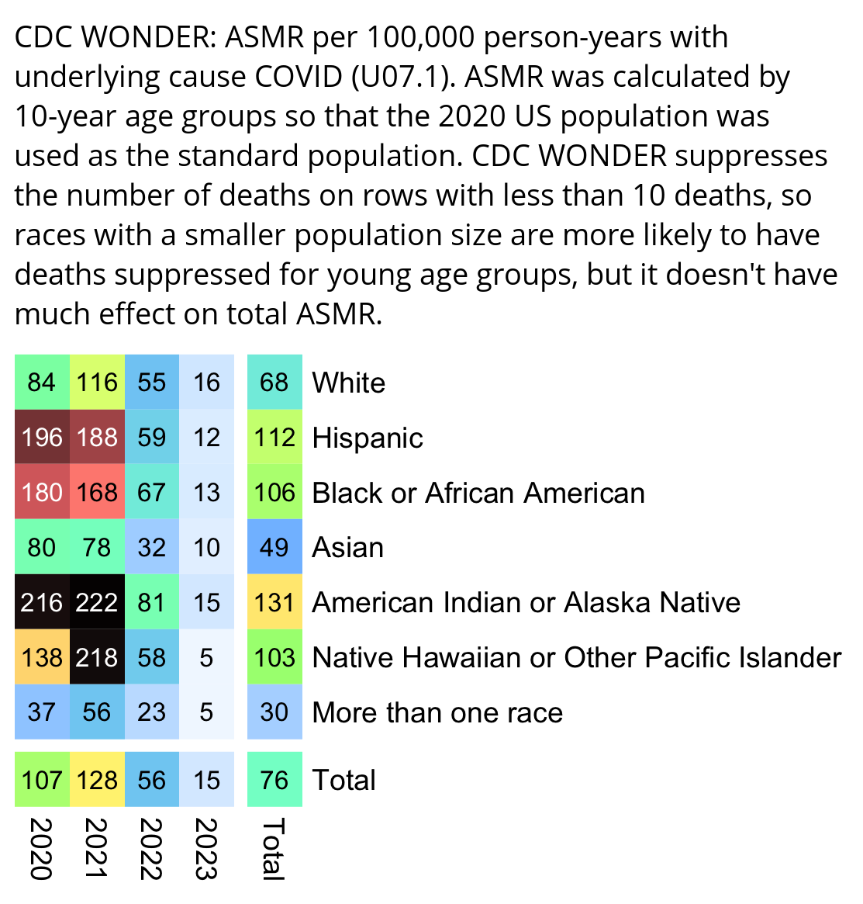
Asians had lower ASMR than whites each year in 2020-2023. Whites had about 5% higher ASMR than Asians in 2020, but it increased to 49% in 2021 and 74% in 2022. But Asians had higher vaccination rates than whites, so it seems to conflict with Chudov's hypothesis that the ratio between whites and Hispanics got lower after 2020 because whites were more likely to be vaccinated. However it could also be that states where Asians lived had more COVID deaths in 2020 relative to 2021-2023.
t=read.csv("http://sars2.net/f/cdc_wonder_ucod_covid_by_race_and_age.csv")
a=rbind(t,cbind(aggregate(t[,4:5],t[,c("year","age")],sum,na.rm=T),race="Total"))
a=rbind(a,cbind(aggregate(a[,4:5],a[,c("race","age")],sum,na.rm=T),year="Total"))
std=with(subset(t,year==2020),tapply(pop,age,sum,na.rm=T))
m=tapply(a$dead/a$pop*std[factor(a$age)]/sum(std)*1e5,list(factor(a$race,unique(a$race)),a$year),sum,na.rm=T)
maxcolor=max(m,na.rm=T)
pal=colorspace::hex(colorspace::HSV(c(210,210,210,160,110,60,30,0,0,0),c(0,.25,rep(.5,8)),c(rep(1,8),.5,0)))
pheatmap::pheatmap(m,filename="0.png",display_numbers=round(m),
gaps_row=nrow(m)-1,gaps_col=ncol(m)-1,
cluster_rows=F,cluster_cols=F,legend=F,cellwidth=17,cellheight=17,fontsize=9,fontsize_number=8,
border_color=NA,na_col="gray90",number_color=ifelse(m>maxcolor*.8,"white","black"),
breaks=seq(0,maxcolor,,256),colorRampPalette(pal)(256))
system("f=0.png;w=`identify -format %w $f`;convert -interline-spacing -2 -gravity northwest -splice 18x20 -size $[w-44]x \\( -pointsize 38 caption:'CDC WONDER: ASMR per 100,000 person-years with underlying cause COVID (U07.1). ASMR was calculated by 10-year age groups so that the 2020 US population was used as the standard population. CDC WONDER suppresses the number of deaths on rows with less than 10 deaths, so races with a smaller population size are more likely to have deaths suppressed for young age groups, but it doesn'\\''t have much effect on total ASMR.' \\) 0.png -append 1.png")
Also in the table below which included data up to May 2023, in ages 65-79 in California, Hispanics had about 3 times higher COVID mortality rate than whites ((43/21.8)/(35.2/54)): [https://www.cdph.ca.gov/Programs/CID/DCDC/Pages/COVID-19/Age-Race-Ethnicity.aspx]
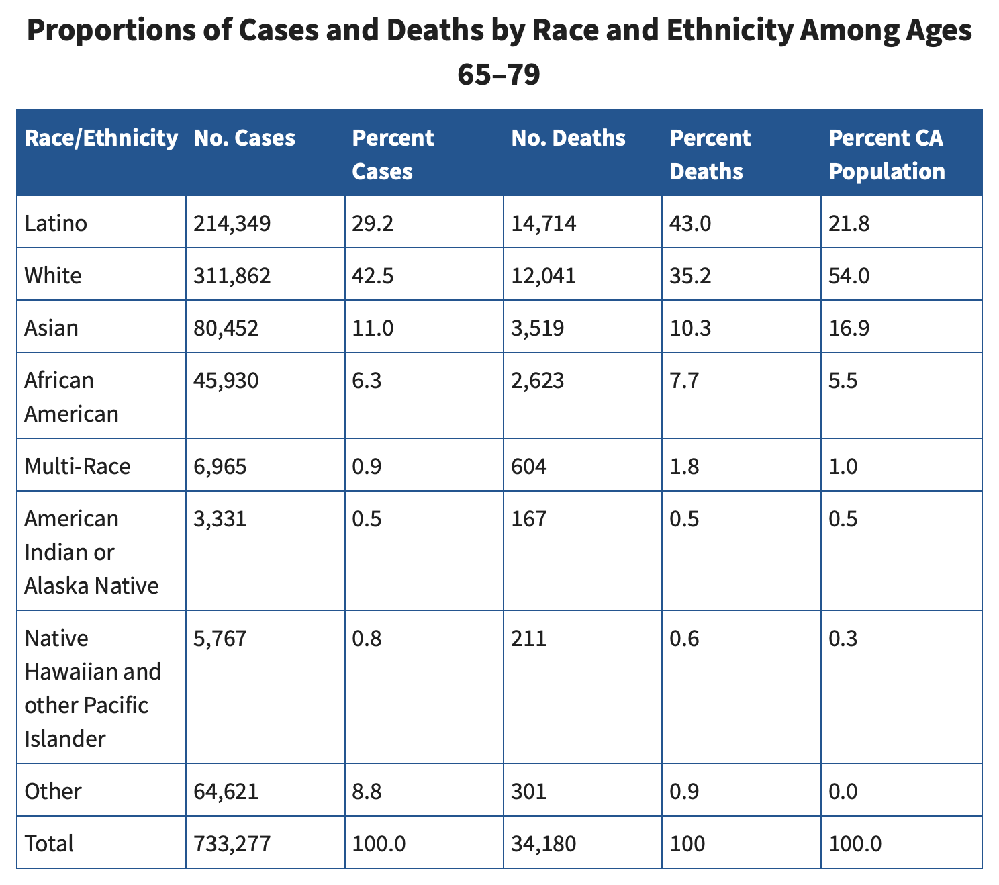
In the heatmap below, within five out of six age groups the total UCoD COVID CMR in 2020-2023 was much higher among Hispanic people than whites. But in ages 85+ Hispanics had only slightly higher CMR than whites, which might be if whites are overrepresented in the upper end of the 85+ age category relative to Hispanics. However for some reason in the year 2023 Hispanics had lower COVID CMR than whites in all age groups:
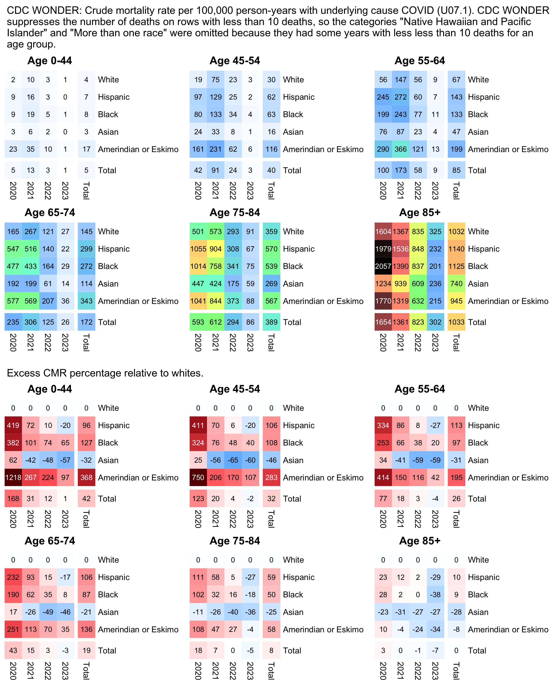
canceledmouse posted this plot of neonatal deaths in Scotland, and he suggested that the spikes in deaths September 2021 and March 2022 might be due to the vaccines: [https://twitter.com/canceledmouse/status/1782970982367371664, https://scotland.shinyapps.io/phs-covid-wider-impact/]

However the data has so much noise that I don't know if the spikes in deaths can be blamed on vaccines. His plot only showed data up to June 2023, so you weren't able to see that July 2023 also had a high number of neonatal deaths. And also stillbirths and postneonatal deaths peaked during completely different months than neonatal deaths. Stillbirths peaked in July 2020 and April 2023 which is difficult to blame on the vaccines, and postneonatal deaths peaked in September 2020 and April 2023:

Eurostat only had yearly data for infant mortality, but when I selected countries that had a neonatal mortality rate available for each year out of 2010-2022, the average mortality rate actually decreased from about 24 deaths per 10,000 live births in 2020 to about 22 in 2021 (even though it would probably be better to calculate total neonatal deaths across all countries divided by total live births across all countries, so then small countries like Luxembourg with a lot of noise wouldn't be given that much weight, or you could also calculate a weighted average by population size): [https://ec.europa.eu/eurostat/web/population-demography/demography-population-stock-balance/database]

In April 2024 a preprint about cancer deaths in ages 15-44 at CDC WONDER was published by Carlos Alegria and Yuri Nunes from Ed Dowd's group Phinance Technologies. [https://www.researchgate.net/publication/378869803_US%5f%2dDeath_Trends_for_Neoplasms_ICD_codes_C00-D48_Ages_15-44] It showed that there was a fairly large increase in mortality between 2020 and 2021:

However the x-axis in the plots above started in 2010, so you couldn't see that the the increase in mortality between 2020 and 2021 wasn't that big compared to the decrease since 1999 (which is when the data at CDC WONDER starts). And you also couldn't see that the long-term trend in CMR between 1999 and 2019 looked curved so that it got flatter over time, and therefore the 2010-2019 linear trend used by Dowd's group might have been too steep relative to a longer-term polynomial trend:

In Dowd's preprint they plotted only CMR and raw deaths but not ASMR. But relative to the decrease in mortality rate in the two previous decades, the increase between 2020 and 2021 was smaller with CMR than with raw deaths, and it was even smaller with ASMR than with CMR:
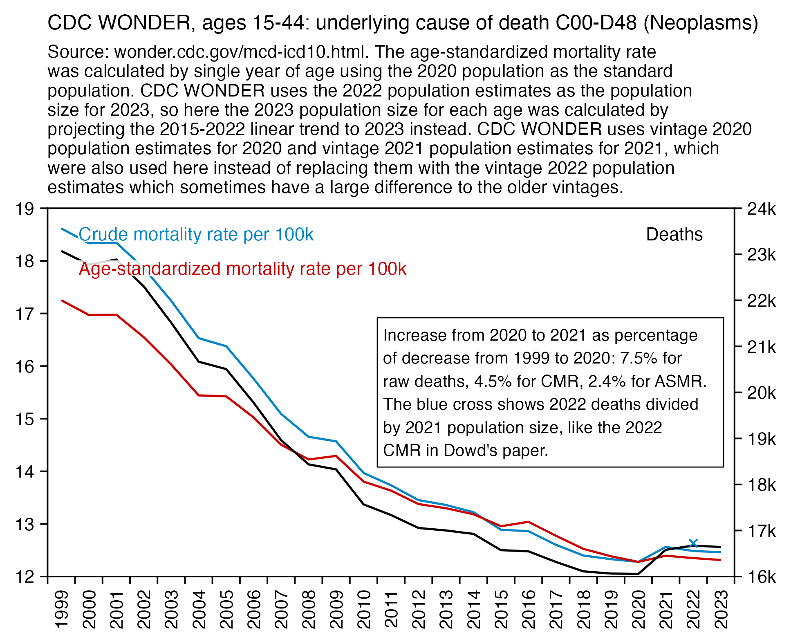
Dowd's team retrieved the data from CDC WONDER when it still used 2021 population estimates for 2022, so they got higher CMR in 2022 than 2021, like how the blue cross in my plot above is higher than the 2021 CMR. But I retrieved data from CDC WONDER after the 2022 population sizes had already been added, so I got lower CMR in 2022 than 2021.
The 2023 population estimates had not yet been added to CDC WONDER at the time when I downloaded the data below, so the 2023 population size is identical to 2022:
> t=read.csv("http://sars2.net/f/wondercanceryearlysingle.csv")|>subset(age%in%15:44)
> a=aggregate(t[,3:4],t[,2,drop=F],sum)
> tail(a)
year dead pop
20 2018 16112 129946462
21 2019 16065 130286975
22 2020 16056 130761522
23 2021 16581 131987622
24 2022 16673 133538236
25 2023 16641 133538236
And when I calculated the 2022 CMR using 2021 population estimates, I got about 1.2% higher CMR than with 2022 population estimates:
> a$dead[a$year==2022]/a$pop[a$year==2022]*1e5 [1] 12.48556 > a$dead[a$year==2022]/a$pop[a$year==2021]*1e5 [1] 12.63225
Here's code for producing the previous plot:
library(ggplot2)
t=read.csv("http://sars2.net/f/wondercanceryearlysingle.csv")|>subset(age%in%15:44)
std=with(subset(t,year==2020),setNames(pop,age))
year=sort(unique(t$year))
xy=data.frame(x=year,cmr=tapply(t$dead,t$year,sum)/tapply(t$pop,t$year,sum)*1e5)
xy$asmr=tapply(std[as.character(t$age)]/sum(std)*t$dead/t$pop,t$year,sum,na.rm=T)*1e5
xy$dead=tapply(t$dead,t$year,sum)
cand=c(sapply(c(1,2,5),\(x)x*10^c(-10:10)))
ymax=max(xy[,2:3]);ymin=min(xy[,2:3])
ystep=cand[which.min(abs(cand-(ymax-ymin)/6))]
ystart=ystep*floor(ymin/ystep)
yend=ystep*ceiling(ymax/ystep)
ybreak=seq(ystart,yend,ystep)
xstart=min(xy$x);xend=max(xy$x)
xlab=c(rbind("",xstart:xend),"")
xbreak=seq(xstart-.5,xend+.5,.5)
ystep2=cand[which.min(abs(cand-(max(xy$dead)-min(xy$dead))/6))]
ystart2=ystep2*floor(min(xy$dead)/ystep2)
yend2=ystep2*ceiling(max(xy$dead)/ystep2)
ybreak2=seq(ystart2,yend2,ystep2)
xy$cmr=(xy$cmr-ystart)/(yend-ystart)
xy$asmr=(xy$asmr-ystart)/(yend-ystart)
xy$dead=(xy$dead-ystart2)/(yend2-ystart2)
color1=c(hcl(225,110,45),"#cc0000")
color2="black"
leg1=data.frame(x=xstart+.025*(xend-xstart),y=seq(.93,0,,11)[1:2],label=c("Crude mortality rate per 100k","Age-standardized mortality rate per 100k"))
leg2=data.frame(x=xstart+.975*(xend-xstart),y=.93,label="Deaths")
kim=\(x)ifelse(x>=1e3,ifelse(x>=1e6,paste0(x/1e6,"M"),paste0(x/1e3,"k")),x)
inc=((xy[23,]-xy[22,])/(xy[1,]-xy[22,]))*100
note=sprintf("Increase from 2020 to 2021 as percentage of decrease from 1999 to 2020: %.1f%% for raw deaths, %.1f%% for CMR, %.1f%% for ASMR. The blue cross shows 2022 deaths divided by 2021 population size, like the 2022 CMR in Dowd's paper.",inc[4],inc[2],inc[3])|>stringr::str_wrap(40)
a=aggregate(t[,3:4],t[,2,drop=F],sum)
annoy=(a$dead[a$year==2022]/a$pop[a$year==2021]*1e5-ystart)/(yend-ystart)
ggplot(xy,aes(x,y))+
geom_hline(yintercept=c(0,1),color="black",linewidth=.3,lineend="square")+
geom_vline(xintercept=c(xstart-.5,xend+.5),color="black",linewidth=.3,lineend="square")+
geom_line(aes(y=cmr),color=color1[1],linewidth=.4)+
geom_line(aes(y=asmr),color=color1[2],linewidth=.4)+
geom_line(aes(y=dead),color=color2[1],linewidth=.4)+
annotate(geom="point",x=2022,y=annoy,shape=4,size=1,color=color1[1])+
annotate(geom="label",x=2010.5,y=.5,size=2.3,lineheight=1.15,label=note,fill=alpha("white",.7),label.r=unit(0,"lines"),label.padding=unit(.3,"lines"),label.size=.2,hjust=0,vjust=.5)+
geom_label(data=leg1,aes(x=x,y=y,label=label),fill=alpha("white",.85),label.r=unit(0,"lines"),label.padding=unit(.04,"lines"),label.size=0,color=color1,size=2.5,hjust=0)+
geom_label(data=leg2,aes(x=x,y=y,label=label),fill=alpha("white",.85),label.r=unit(0,"lines"),label.padding=unit(.04,"lines"),label.size=0,color=color2,size=2.5,hjust=1)+
labs(title="CDC WONDER, ages 15-44: underlying cause of death C00-D48 (Neoplasms)",subtitle=stringr::str_wrap("Source: wonder.cdc.gov/mcd-icd10.html. The age-standardized mortality rate was calculated by single year of age using the 2020 population as the standard population. CDC WONDER uses the 2022 population estimates as the population size for 2023, so here the 2023 population size for each age was calculated by projecting the 2015-2022 linear trend to 2023 instead. CDC WONDER uses vintage 2020 population estimates for 2020 and vintage 2021 population estimates for 2021, which were also used here instead of replacing them with the vintage 2022 population estimates which sometimes have a large difference to the older vintages.",83),x=NULL,y=NULL)+
coord_cartesian(clip="off",expand=F)+
scale_x_continuous(limits=c(xstart-.5,xend+.5),breaks=xbreak,labels=xlab)+
scale_y_continuous(limits=c(0,1),breaks=seq(0,1,,length(ybreak)),labels=ybreak,sec.axis=sec_axis(trans=~.+0,breaks=seq(0,1,,length(ybreak2)),labels=kim(ybreak2)))+
guides(colour=guide_legend(override.aes=list(linewidth=.5)))+
theme(axis.text=element_text(size=7,color="black"),
axis.text.x=element_text(angle=90,vjust=.5,hjust=1),
axis.ticks=element_line(linewidth=.3,color="black"),
axis.ticks.x=element_line(color=alpha("black",c(1,0))),
axis.ticks.length=unit(.2,"lines"),
axis.title=element_text(size=8),
legend.position="none",
panel.background=element_rect(fill="white"),
plot.background=element_rect(fill="white"),
plot.margin=margin(.4,.4,.4,.4,"lines"),
plot.subtitle=element_text(size=7,margin=margin(0,0,.7,0,"lines")),
plot.title=element_text(size=8,margin=margin(0,0,.6,0,"lines")))
ggsave("1.png",width=4.3,height=3.5,dpi=450)
In the next plot I first calculated a linear trend in CMR within each 5-year age group in 2010-2019, and then I multiplied the projected baseline by the population size of each age group in order to get the expected deaths for each age group, and I added together the expected deaths on each month. So my method allows plotting raw deaths on the y-axis while simultaneously calculating the baseline so that it accounts for changes to the size of different age groups. In my plot there's an inflection point in the slope of the baseline around the year 2017 after which the baseline becomes more flat. So when Dowd's team plotted raw deaths using a 2010-2019 linear baseline, they exaggerated excess deaths during COVID because the slope of the baseline was too steep. My plot also shows that in September 2021 and January 2022 when there's big spikes in COVID deaths, there's also more UCoD cancer deaths than in the surrounding months, so a part of the increase in UCoD cancer deaths might be due to COVID:

In the US young age groups had more COVID deaths in 2021 and 2022 relative to 2020, and old age groups had more COVID deaths in 2020 relative to 2021 and 2022, which might be because young age groups were less likely to be vaccinated.
Carlos Alegria and Yuri Nunes from Dowd's company Phinance Technologies published a preprint about cancer deaths in ages 75-84 at CDC WONDER. [https://www.researchgate.net/publication/379476704_Trends_in_death_rates_from_neoplasms_in_the_US_for_all_ages_and_detailed_analysis_for_75-84] Dowd posted this tweet about the preprint: [https://twitter.com/DowdEdward/status/1774863407063425072]

When I tried replicating the plot, my mortality rate for 2022 was about 1009 and not about 1090 like in Dowd's paper, as is shown by the green cross here:

But then I realized the difference was probably because Alegria and Nunes wrote that they downloaded data from CDC WONDER in December 2022, so at the time CDC WONDER still probably used the 2021 population estimates as the population size for 2022, in the same way that in March 2024 when I took the screenshot below, WONDER still used the 2022 population estimates for 2023 and 2024:

In the table above if you calculate the mortality rate for 2022 using the 2021 population size, it's 176784/16206075*1e5 or about 1091, which matches Dowd's preprint.
The light blue line here shows that the mortality rate in 2023 also gets a bit lower if you extrapolate the 2023 population size from the past trend instead of using the 2022 population size for 2023:
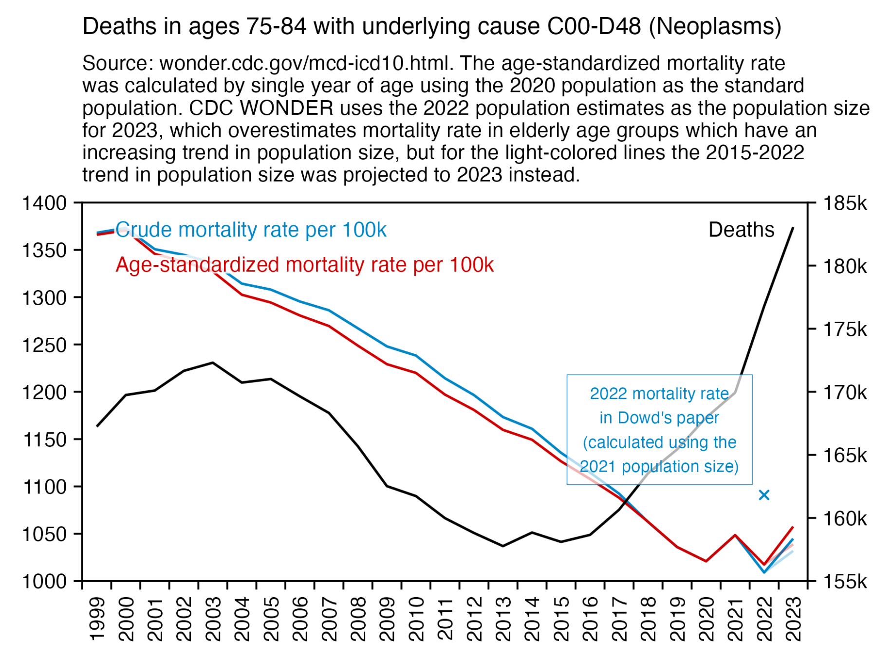
Dowd's tweet said: "Excess Cancer as Underlying Cause (UC) for 75-84 saw -0.1% in 20 (z-score -0.3), +4.8% in 21 (z-score 10.1), +11.5% in 22 (z-score 24.0)". When I used the 2021 population estimate for 2022 and I used a 2010-2019 linear trend like Dowd, for some reason my z-score for 2022 was about 22.1 and not 24.0. But my z-score fell to only about 6.0 when I used the 2022 population estimate for 2022 instead:
> d=data.frame(year=2010:2023) > d$dead=c(161735,159986,158811,157768,158844,158105,158660,160652,163543,165432,167957,169929,176784,183053) > d$pop=c(13061122,13175230,13272634,13446519,13682690,13923174,14233534,14706551,15394374,15969872,16451547,16206075,17520545,17520545) > d$cmr=d$dead/d$pop*1e5 > pred=d$year%in%2010:2019 > d$trend=predict(lm(cmr~year,d[pred,]),d) > d$excess=d$cmr-d$trend > sd=sd(d$excess[pred]) > d$sigma=d$excess/sd > (t$dead[t$year==2022]/t$pop[t$year==2021]*1e5-t$trend[t$year==2022])/sd [1] 22.16794 > print.data.frame(mutate_if(d,is.double,round,1),row.names=F) year dead pop cmr trend excess sigma 2010 161735 13061122 1238.3 1240.8 -2.5 -0.5 2011 159986 13175230 1214.3 1218.9 -4.6 -0.9 2012 158811 13272634 1196.5 1197.1 -0.5 -0.1 2013 157768 13446519 1173.3 1175.2 -1.9 -0.4 2014 158844 13682690 1160.9 1153.4 7.6 1.5 2015 158105 13923174 1135.6 1131.5 4.1 0.8 2016 158660 14233534 1114.7 1109.6 5.1 1.0 2017 160652 14706551 1092.4 1087.8 4.6 0.9 2018 163543 15394374 1062.4 1065.9 -3.6 -0.7 2019 165432 15969872 1035.9 1044.0 -8.1 -1.6 2020 167957 16451547 1020.9 1022.2 -1.3 -0.3 2021 169929 16206075 1048.6 1000.3 48.2 9.5 2022 176784 17520545 1009.0 978.5 30.5 6.0 2023 183053 17520545 1044.8 956.6 88.2 17.4
In the plot below I used tempdisagg::td to interpolate yearly population sizes to monthly so that averages within years were preserved. I got the population size for 2023 by doing a linear regression for the trend in population size in 2015-2022. The population size falls far below the trend in 2021, but the next year it gets corrected again so that it roughly falls back on the prepandemic trend:
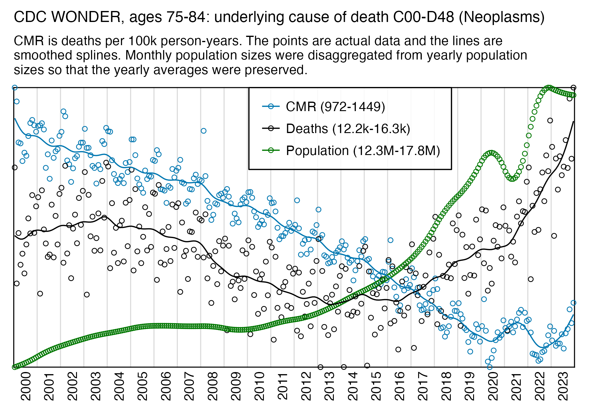
The plot above also shows that the number of cancer deaths in 2021 roughly fell on the past trend, but the reason why the CMR in 2021 was far above the previous trend was mainly because the population size was below the trend in 2021.
At CDC WONDER ages 75-84 have about 97,000 deaths with underlying cause of death COVID in 2020, about 99,000 in 2021, and about 51,000 in 2022. But the population decreases by about 245,000 from 2020 to 2021, even though in earlier years it increased by about 500,000 per year. So the population size in 2021 is about 750,000 people below the trend, which is much higher than the number of COVID deaths in 2020 and 2021 combined. So in the scenario where there would be some kind of a glitch in the population estimates used by WONDER and the population size did not actually decrease that much below the trend 2022, then the excess CMR in 2022 might actually be lower.
At first I thought the decrease in population size in 2021 may have been because of changes to the methodology for estimating population size that were introduced because of COVID. But then I noticed that the United States had a dip in births in 1945, and people born in 1945 were first included in the 75-84 age group in 2020, but there was a peak in births in 1947, and 2022 was the first year when people born in 1947 started to get included in the 75-84 age group. There were almost a million more births in 1947 than 1945. So in this plot the temporary dip in births in 1945 matches the temporary dip in population size in 2021 in the plot above: [https://www.calculatedriskblog.com/2010/04/us-births-per-year.html]

This also shows how the wave of people born in 1947 reaches the 75-84 age group in 2022:

However I'm not sure if the dip in births in 1945 is enough to explain the decrease in population size from 2020 to 2021.
CDC WONDER uses the yearly population estimates produced by the US Census Bureau, which represent the population on July 1st of each year, so there probably weren't that many COVID deaths subtracted in the population estimates for 2020 since there weren't yet that many people people who had died of COVID on July 1st 2020. But in any case, the reason why Dowd's paper had such a big increase in cancer CMR from 2020 to 2021 might partially be if by 2021 more people who died because of COVID had been subtracted from the mid-year population estimate than in 2020. So then in the scenario where there's not that many people who would've died of cancer in 2021 if they hadn't died of COVID before, the COVID deaths in 2020-2021 might have artificially increased the cancer CMR in 2021 if they reduced the actual population size but it was not sufficiently accounted for in the mid-year population estimates for 2020.
A methodology article by the US Census Bureau says: "In general, the birth and death data we receive from NCHS have a two-year lag. This means that the most recent final data we have on births and deaths by geographic and demographic detail for each vintage of estimates refer to the calendar year two years prior to the vintage year. For example, the most current full-detail birth and death data used in Vintage 2023 were from calendar year 2021. Additionally, for Vintage 2023 we utilized the available NCHS provisional data to account for recent trends and COVID-19 impacts on natality and mortality, which varied in recency by component." [https://www2.census.gov/programs-surveys/popest/technical-documentation/methodology/2020-2023/methods-statement-v2023.pdf] However maybe the two-year lag didn't apply to COVID deaths or the Census Bureau used some method to account for COVID deaths with a shorter delay.
The US Census Bureau publishes new population estimates annually so that the past population estimates get revised in new releases. For example the vintage 2020 population estimate for the year 2020 was much higher than the vintage 2021 and 2022 estimates for the year 2020. But CDC WONDER uses the vintage 2020 population estimate for the year 2020, vintage 2021 estimate for the year 2021, and vintage 2022 estimate for the year 2022:
> vintage2022=read.csv("https://www2.census.gov/programs-surveys/popest/datasets/2020-2022/national/asrh/nc-est2022-agesex-res.csv")
> sum(vintage2022$POPESTIMATE2022[vintage2022$SEX==0&vintage2022$AGE%in%75:84]) # vintage 2022 estimate for 2022 (same as WONDER)
[1] 17520545
> sum(vintage2022$POPESTIMATE2021[vintage2022$SEX==0&vintage2022$AGE%in%75:84]) # vintage 2022 estimate for 2021 (different from WONDER)
[1] 16339316
> vintage2021=read.csv("https://www2.census.gov/programs-surveys/popest/datasets/2020-2021/national/asrh/nc-est2021-agesex-res.csv")
> sum(vintage2021$POPESTIMATE2021[vintage2021$SEX==0&vintage2021$AGE%in%75:84]) # vintage 2021 estimate for 2021 (same as WONDER)
[1] 16206075
In the plot below when I used the vintage 2022 population estimates for the years 2020 and 2021, 2020 actually got a higher CMR than 2021 for UCoD neoplasms in ages 75-84:
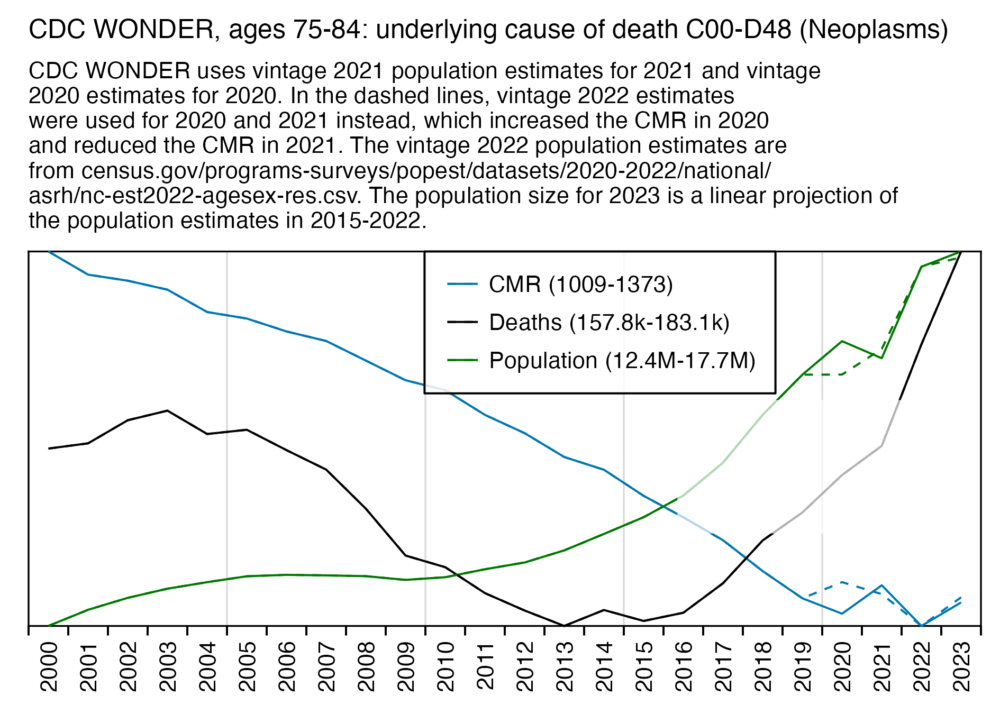
The population estimates for 2020 may have been revised downwards in the vintage 2021 release because of COVID deaths or because of changes to the methodology of accounting for COVID. The methodology article of the vintage 2021 release said: "To account for changes to natality resulting from the COVID-19 pandemic, we also incorporated monthly total births for the nation in the first quarter of 2021 and used recent trends to project births for the second quarter of the year. To reflect the impact of COVID-19 on deaths, we had data for the first half of 2021 that includes recent trends and patterns of excess mortality from the pandemic. Essentially, the NCHS data are used in conjunction with the data received from the FSCPE to create short-term projections that approximate the final NCHS data by characteristics." [https://www2.census.gov/programs-surveys/popest/technical-documentation/methodology/2020-2021/methods-statement-v2021.pdf] However the vintage 2020 methodology article didn't mention if they took COVID deaths into account, but only that they accounted for changes to migration patterns because of COVID. [https://www2.census.gov/programs-surveys/popest/technical-documentation/methodology/2010-2020/methods-statement-v2020-final.pdf]
An annoying feature at CDC WONDER is that it doesn't return population sizes for monthly or weekly data but only yearly data. However the US Census Bureau has actually produced monthly population estimates by single year of age, even though they seem to be interpolated from quarterly population estimates. [https://www2.census.gov/programs-surveys/popest/datasets/2020-2022/national/asrh/, https://www2.census.gov/programs-surveys/popest/datasets/2010-2020/national/asrh/] There's one set of estimates for 2010-2020 which are based on the 2010 census, and there's another set of estimates for 2020 onwards which are based on the 2020 census. This combines the monthly resident population estimates from both sets into a single file:
u=https://www2.census.gov/programs-surveys/popest/datasets
parallel -j20 curl -s ::: $u/2020-2022/national/asrh/nc-est2022-alldata-r-file0{1..8}.csv|awk 'NR==1||!/UNIVERSE/'>new
parallel -j20 curl -s ::: $u/2010-2020/national/asrh/NC-EST2020-ALLDATA-R-File{01..24}.csv|awk 'NR==1||!/UNIVERSE/' >old
sed 1d old|cut -d, -f2-5|awk -F, '$2!=2021&&($2!=2020||$1<4)'|cat - <(sed 1d new|cut -d, -f2-5)|awk -F, '$3!=999&&$1!~/4\.[12]/{print$3 FS$2 FS$1 FS$4}'|sort -t, -nk1,1 -nk2,2 -nk3,3|sed s/X//|(echo age,year,month,pop;cat)>usmonthpop.csv
In the plot below I used the monthly resident population estimates generated by the code above, which are somewhat different from the yearly population estimates that are used by CDC WONDER. If the plot below would be missing the blue line for the baseline and the green line for the population size so that it would only include the black line for the raw number of deaths and the gray baseline, it would seem like there was a sudden unexplained inflection point in the number of deaths in mid-2021. However actually the inflection point was because in mid-2021 the population size of ages 75-84 started to increase dramatically, because the baby boomers who were born in the second half of 1946 started to turn 75. Births per year peaked in 1947, but there was already a big increase in births in the second half of 1946. So therefore the gray baseline which is based on the linear trend in raw deaths in 2010-2019 is far too low in 2021-2023. But the blue baseline is more accurate, and relative to the blue baseline there were actually negative excess cancer deaths in 2021-2023:

Clare Craig posted this tweet: [https://x.com/ClareCraigPath/status/1796064400060625118]

Her blue line shows the 9th August 2023 edition of the ONS data and the green line shows the 7th July 2022 edition, so there's a gap of over a year between the editions. So therefore a lot of deaths that were missing because of a registration delay in the 7th edition have been added to the 9th edition:

The 3rd edition was similarly missing a lot of deaths that had been added by the 7th edition even though there was a shorter time gap between the editions. (I didn't include the first two editions in the plot above, because they showed weekly instead of monthly data.)
For some reason the new FOI response has a higher number of deaths in January 2022 than December 2021, even though in the ONS dataset it's the reverse. I thought it might be if the FOI response was by registration date, but that doesn't seem to be the case:

library(ggplot2)
# download.file("https://www.ons.gov.uk/file?uri=/peoplepopulationandcommunity/birthsdeathsandmarriages/deaths/adhocs/1343dailydeathsbydateofoccurrence1stjune2014to31stmay2023bysingleyearofageengland/dailydeaths2014to2023england.xlsx","dailydeaths2014to2023england.xlsx")
# download.file("https://www.whatdotheyknow.com/request/deaths_in_nims_database/response/2653782/attach/4/Covid19VAccineDataForThoseWithADeathRecordv5.csv","Covid19VAccineDataForThoseWithADeathRecordv5.csv")
# download.file("https://www.ons.gov.uk/file?uri=/peoplepopulationandcommunity/healthandsocialcare/causesofdeath/datasets/estimatingexcessdeathsintheukmethodologychanges/current/dataset20240220.xlsx","dataset20240220.xlsx")
t=read.csv("Covid19VAccineDataForThoseWithADeathRecordv5.csv")
t=t[t$Dose.Number==1,]
a=aggregate(list(y=t$Record.Count),list(x=sub("../(..)/(....)","\\2-\\1",t$Date)),sum)
a=a[a$x!="2023-08",]
a$z="May 2024 UKHSA FOI"
t0=read.csv("http://sars2.net/f/ons-table-1-2021-december.csv")|>subset(cause=="All causes"&status!="Unvaccinated")
t1=read.csv("http://sars2.net/f/ons-table-1-2022-july.csv")|>subset(cause=="All causes"&status=="Ever vaccinated")
t2=read.csv("http://sars2.net/f/ons-table-1-2023-august.csv")|>subset(cause=="All causes"&status=="Ever vaccinated")
t3=read.csv("http://sars2.net/f/ons-table-1-2023-february.csv")|>subset(cause=="All causes"&status=="Ever vaccinated")
d0=aggregate(list(y=t0$dead),list(x=sprintf("%d-%02d",t0$year,match(t0$month,month.name))),sum)|>cbind(z="ONS 3rd edition (December 2021)")
d1=data.frame(x=sprintf("%d-%02d",t1$year,match(t1$month,month.name)),y=t1$dead,z="ONS 7th edition (July 2022)")
d2=data.frame(x=sprintf("%d-%02d",t3$year,match(t3$month,month.name)),y=t3$dead,z="ONS 8th edition (February 2023)")
d3=data.frame(x=sprintf("%d-%02d",t2$year,match(t2$month,month.name)),y=t2$dead,z="ONS 9th edition (August 2023)")
reg=as.data.frame(readxl::read_excel("dataset20240220.xlsx",sheet=5,skip=4))
reg=reg[!grepl("Wales|Ireland|Scotland",reg$Geography),]
d4=aggregate(list(y=reg$Death),list(x=sprintf("%d-%02d",reg$Year,match(reg$Month,month.name))),sum)
d4=d4[d4$x>="2020-12",]
d4$z="All deaths by registration date"
occ=as.data.frame(readxl::read_excel("dailydeaths2014to2023england.xlsx",sheet=4,range="A6:CP3293"))
occ=aggregate(list(y=rowSums(occ[,-(1:3)])),list(x=sprintf("%s-%02d",occ$Year,occ$Month)),sum)
occ$z="All deaths by date of occurrence"
occ=occ[occ$x>="2020-12",]
xy=rbind(a,d3,d2,d1,d0,occ,d4)
xy$z=factor(xy$z,unique(xy$z))
xy$x=as.Date(paste0(xy$x,"-1"))
xstart=min(xy$x);xend=max(xy$x)
xbreak=sort(c(seq(xstart-15,xend+15,"month"),seq(xstart,xend,"month")))
xlab=c(rbind("",format(seq(xstart,xend,"month"),"%y %b")),"")
cand=c(sapply(c(1,2,5),\(year)year*10^c(-10:10)))
ymin=min(xy$y);ymax=max(xy$y)
ystep=cand[which.min(abs(cand-(ymax-ymin)/6))]
yend=ystep*ceiling(ymax/ystep)
ystart=0
ybreak=seq(ystart,yend,ystep)
color=c("black",hcl(c(310,270,240,180)+15,100,50),"gray35","gray70")
lab1=data.frame(x=xstart+.99*(xend-xstart),y=rev(seq(yend*.07,,yend/13,5)),label=levels(xy$z)[1:5])
lab2=data.frame(x=xstart+.99*(xend-xstart),y=seq(yend*.93,,-yend/13,2),label=levels(xy$z)[6:7])
kim=\(x)ifelse(x>=1e3,ifelse(x>=1e6,paste0(x/1e6,"M"),paste0(x/1e3,"k")),x)
ggplot(xy,aes(x=x,y=y))+
geom_vline(xintercept=seq(as.Date("2021-1-1")-16,xend,"3 month"),color="gray91",linewidth=.3)+
geom_vline(xintercept=seq(as.Date("2021-1-1")-16,xend,"year"),color="gray65",linewidth=.3)+
geom_hline(yintercept=c(ystart,yend),color="gray65",linewidth=.3,lineend="square")+
geom_vline(xintercept=c(xstart-15,xend+15),color="gray65",linewidth=.3,lineend="square")+
geom_line(aes(color=z),linewidth=.4)+
geom_label(data=lab1,aes(x=x,y=y,label=label),fill=alpha("white",.8),label.r=unit(0,"lines"),label.padding=unit(.04,"lines"),label.size=0,color=color[1:5],size=2.6,hjust=1)+
geom_label(data=lab2,aes(x=x,y=y,label=label),fill=alpha("white",.8),label.r=unit(0,"lines"),label.padding=unit(.04,"lines"),label.size=0,color=color[6:7],size=2.6,hjust=1)+
labs(title="Monthly deaths among vaccinated people in England: May 2024 UKHSA FOI response compared to different editions of the ONS dataset for mortality by vaccination status"|>stringr::str_wrap(63),subtitle="Sources: whatdotheyknow.com/request/deaths_in_nims_database, ons.gov.uk/peoplepopulationandcommunity/birthsdeathsandmarriages/
deaths/datasets/deathsbyvaccinationstatusengland, ons.gov.uk/peoplepopulationandcommunity/healthandsocialcare/causesofdeath/
datasets/estimatingexcessdeathsintheukmethodologychanges, ons.gov.uk/peoplepopulationandcommunity/
birthsdeathsandmarriages/deaths/adhocs/
1343dailydeathsbydateofoccurrence1stjune2014to31stmay2023bysingleyearofageengland."|>stringr::str_wrap(90),x=NULL,y=NULL)+
coord_cartesian(clip="off",expand=F)+
scale_x_date(limits=c(xstart-15,xend+15),breaks=xbreak,labels=xlab)+
scale_y_continuous(limits=c(ystart,yend),breaks=ybreak,labels=kim)+
scale_color_manual(values=color)+
theme(axis.text=element_text(size=6.5,color="black"),
axis.text.x=element_text(angle=90,vjust=.5,hjust=1),
axis.ticks=element_line(linewidth=.3,color="gray65"),
axis.ticks.x=element_line(color=alpha("gray65",c(1,0))),
axis.ticks.length=unit(.15,"lines"),
axis.title=element_text(size=8),
legend.position="none",
panel.background=element_rect(fill="white"),
panel.grid=element_blank(),
plot.background=element_rect(fill="white"),
plot.margin=margin(.3,.3,.3,.3,"lines"),
plot.subtitle=element_text(size=6.6,margin=margin(0,0,.6,0,"lines")),
plot.title=element_text(size=8.2,margin=margin(.1,0,.5,0,"lines")))
ggsave("1.png",width=4,height=3.5,dpi=450)
For some reason in April 2021 the 9th edition has less deaths in ages 90+ than the 7th edition. So were some old people linked to the 2011 census but not the 2021 census? However the population size of ages 90+ is higher in the 9th edition than the 7th edition.
| Population size and deaths in April 2021 (9th August 2023 edition vs 7th July 2022 edition) | ||||||||
|---|---|---|---|---|---|---|---|---|
| age | 18-39 | 40-49 | 50-59 | 60-69 | 70-79 | 80-89 | 90+ | total |
| population in 7th edition | 920010 | 453934 | 527707 | 430934 | 351089 | 167693 | 36709 | 2888076 |
| population in 9th edition | 1131560 | 541233 | 594904 | 473849 | 382912 | 179226 | 37954 | 3341638 |
| absolute change | 211550 | 87299 | 67197 | 42915 | 31823 | 11533 | 1245 | 453562 |
| percentage change | 23.0 | 19.2 | 12.7 | 10.0 | 9.1 | 6.9 | 3.4 | 15.7 |
| deaths in 7th edition | 490 | 676 | 1772 | 3599 | 7524 | 10892 | 6880 | 31833 |
| deaths in 9th edition | 551 | 666 | 1825 | 3664 | 7528 | 10855 | 6631 | 31720 |
| absolute change | 61 | -10 | 53 | 65 | 4 | -37 | -249 | -113 |
| percentage change | 12.4 | -1.5 | 3.0 | 1.8 | 0.1 | -0.3 | -3.6 | -0.4 |
Craig posted this plot where almost 100% of all deaths were in vaccinated people in late 2022. She took monthly deaths in vaccinated people from the new FOI response, and she took deaths in the general population of England from an ONS user request for deaths by date of occurrence: [https://www.whatdotheyknow.com/request/deaths_in_nims_database#incoming-2653782, https://www.ons.gov.uk/peoplepopulationandcommunity/birthsdeathsandmarriages/deaths/adhocs/1343dailydeathsbydateofoccurrence1stjune2014to31stmay2023bysingleyearofageengland]
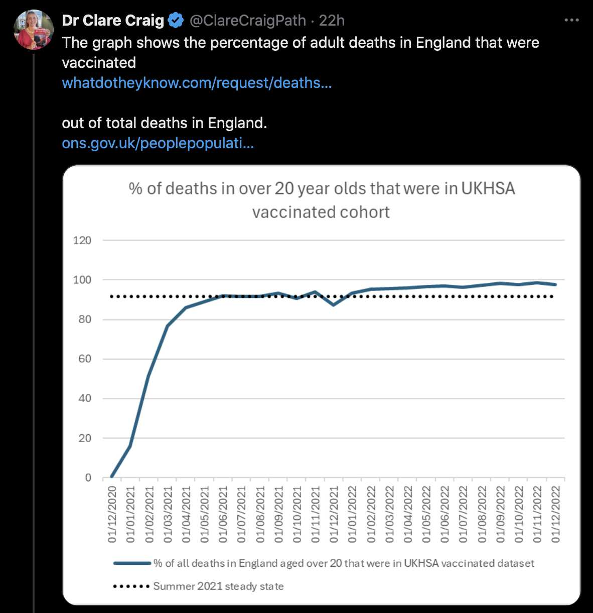
I don't know if the reason why Craig didn't include 2023 in her plot was because the ONS user response was by date of occurrence and not registration date, so it was missing a lot of deaths in 2023. However it's also missing deaths in late 2022, which might explain why the percentage in Craig's plot reached close to 100% in late 2022. In the second plot below I got a lower percentage of total deaths in the FOI response in late 2022, because I took the number of deaths among the general population of England from a more recent dataset which was not missing as many deaths as the old ONS user reponse:
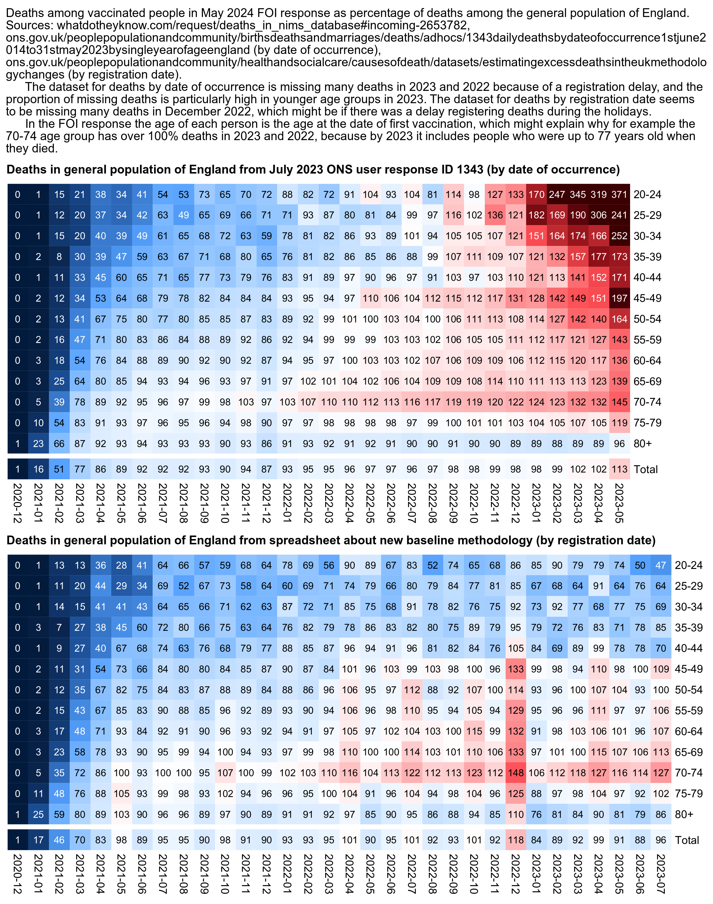
# download.file("https://www.ons.gov.uk/file?uri=/peoplepopulationandcommunity/birthsdeathsandmarriages/deaths/adhocs/1343dailydeathsbydateofoccurrence1stjune2014to31stmay2023bysingleyearofageengland/dailydeaths2014to2023england.xlsx","dailydeaths2014to2023england.xlsx")
# download.file("https://www.whatdotheyknow.com/request/deaths_in_nims_database/response/2653782/attach/4/Covid19VAccineDataForThoseWithADeathRecordv5.csv","Covid19VAccineDataForThoseWithADeathRecordv5.csv")
# download.file("https://www.ons.gov.uk/file?uri=/peoplepopulationandcommunity/healthandsocialcare/causesofdeath/datasets/estimatingexcessdeathsintheukmethodologychanges/current/dataset20240220.xlsx","dataset20240220.xlsx")
t=read.csv("Covid19VAccineDataForThoseWithADeathRecordv5.csv")
t=t[t$Dose.Number==1,]
m=xtabs(t$Record~t$Age+sub("../(..)/(....)","\\2-\\1",t$Date))
ages=sort(as.numeric(sub("[-+].*","",unique(t$Age))))
death=as.data.frame(readxl::read_excel("dailydeaths2014to2023england.xlsx",sheet=4,range="A6:CP3293"))
month=sprintf("%s-%02d",death$Year,death$Month)
death=death[,-c(1:23)]
death=t(rowsum(t(death),cut(as.numeric(colnames(death)),c(ages,Inf),,T,F)))
death=t(rowsum(death,month))
d=as.data.frame(readxl::read_excel("dataset20240220.xlsx",sheet=5,skip=4))
d=d[!grepl("Wales|Ireland|Scotland",d$Geography),]
death2=xtabs(d$Death~pmin(80,as.numeric(sub(" .*","",sub("Less",0,d$Age))))+sprintf("%s-%02d",d$Year,match(d$Month,month.name)))
death2=death2[-(1:5),]
pal=colorRampPalette(colorspace::hex(colorspace::HSV(c(210,210,210,210,0,0,0,0,0),c(1,.8,.6,.3,0,.3,.6,.8,1),c(.3,.65,1,1,1,1,1,.65,.3))))(256)
m1=m
pick=intersect(colnames(m1),colnames(death));m1=m1[,pick];death=death[,pick]
m1=rbind(m1,Total=colSums(m1));death=rbind(death,Total=colSums(death))
m1=m1/death*100
m2=m
pick=head(intersect(colnames(m2),colnames(death2)),-1);m2=m2[,pick];death2=death2[,pick]
m2=rbind(m2,Total=colSums(m2));death2=rbind(death2,Total=colSums(death2))
m2=m2/death2*100
pheatmap::pheatmap(m1,filename="i1.png",display_numbers=round(m1),
gaps_row=nrow(m1)-1,
cluster_rows=F,cluster_cols=F,legend=F,cellwidth=17,cellheight=17,fontsize=9,fontsize_number=8,
border_color=NA,na_col="gray90",number_color=ifelse(abs(m1-100)>50,"white","black"),
breaks=seq(0,200,,256),pal)
pheatmap::pheatmap(m2,filename="i2.png",display_numbers=round(m2),
gaps_row=nrow(m2)-1,
cluster_rows=F,cluster_cols=F,legend=F,cellwidth=17,cellheight=17,fontsize=9,fontsize_number=8,
border_color=NA,na_col="gray90",number_color=ifelse(abs(m2-100)>50,"white","black"),
breaks=seq(0,200,,256),pal)
cap=" Deaths among vaccinated people in May 2024 FOI response as percentage of deaths among the general population of England. Sources: whatdotheyknow.com/request/deaths_in_nims_database#incoming-2653782, ons.gov.uk/peoplepopulationandcommunity/birthsdeathsandmarriages/deaths/adhocs/1343dailydeathsbydateofoccurrence1stjune2014to31stmay2023bysingleyearofageengland (by date of occurrence), ons.gov.uk/peoplepopulationandcommunity/healthandsocialcare/causesofdeath/datasets/estimatingexcessdeathsintheukmethodologychanges (by registration date)."
cap=paste0(cap,"
The dataset for deaths by date of occurrence is missing many deaths in 2023 and 2022 because of a registration delay, and the proportion of missing deaths is particularly high in younger age groups in 2023. The dataset for deaths by registration date seems to be missing many deaths in December 2022, which might be if there was a delay registering deaths during the holidays.
In the FOI response the age of each person is the age at the date of first vaccination, which might explain why for example the 70-74 age group has over 100% deaths in 2023 and 2022, because by 2023 it includes people who were up to 77 years old when they died.")
system("f=i1.png;mar=44;w=`identify -format %w $f`;convert -gravity northwest \\( -size $[w-mar]x -font Arial-Bold -pointsize 41 caption:'Deaths in general population of England from July 2023 ONS user response ID 1343 (by date of occurrence)' -extent $[w-mar]x -gravity north \\) $f -append l1.png")
system("f=i2.png;mar=44;w=`identify -format %w $f`;convert -gravity northwest \\( -size $[w-mar]x -font Arial-Bold -pointsize 41 caption:'Deaths in general population of England from spreadsheet about new baseline methodology (by registration date)' -extent $[w-mar]x -gravity north \\) $f -append l2.png")
system("convert -gravity northwest \\( -splice x18 l1.png \\) l2.png -append 0.png")
system(paste0("f=0.png;mar=40;w=`identify -format %w $f`;convert -gravity northwest \\( -size $[w-mar]x -font Arial -interline-spacing -5 -pointsize 41 caption:'",gsub("'","'\\\\''",cap),"' -extent $[w-mar]x -gravity north -splice x20 \\) $f -append 1.png"))
As an explanation why almost all deaths were in vaccinated people in late 2022, Craig suggested that dying people who were previously unvaccinated were vaccinated on their deathbed:
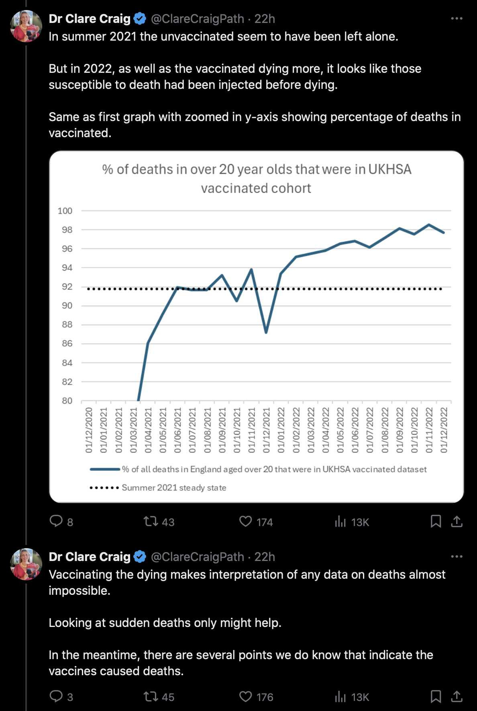
However her theory doesn't hold water, because in the new FOI response there's 269,247 people who died in the second half of 2022, but only 193 of them received the first vaccine dose on a week that started in the second half of 2022:
t=read.csv("Covid19VAccineDataForThoseWithADeathRecordv5.csv")
for(i in grep("Date",colnames(t)))t[,i]=as.Date(t[,i],"%d/%m/%Y")
d1=as.Date("2022-7-1");d2=as.Date("2022-12-31")
t=t[t$Dose.Number==1&t$Date.of.Death%in%d1:d2,]
sum(t$Record.Count) # 269247
sum(t$Record.Count[t$Dose.Date%in%d1:d2]) # 193
Clare Craig posted plots which showed that people vaccinated during the rollout peak subsequently had a low mortality rate up to the end of 2021, but people vaccinated either before or after the rollout peak had a higher mortality rate:
The same pattern is seen in older age groups.
- Targeting of the dying in spring 2021, with a high proportion dead by the end of the year
- Rollout to the healthy with a low proportion who then die
- Targeting the dying again, perhaps pressuring those declined vaccinations if they then become ill or are admitted to hospital
[...]
Craig said that in during the third phase in the second half of 2021, "the dying" were targeted again because the mortality rate was higher than during the second phase. However I don't know if people who were soon about to die were even overrepresented among the people who were vaccinated in the third phase, because the plot below shows that the mortality rate of people vaccinated in the second half of 2021 is close to the baseline in most age groups (except it's below the baseline in youngest age groups and maybe a bit above it in the two oldest age groups, but on the other hand I didn't account for aging of people over time when I calculated the baseline, so the baseline is too low particularly in the two oldest age groups, because by the end of 2022 for example the age group 70-79 includes people who are up to 81 years old):

In the plot above ages 80+ are far above the baseline from February to April 2021, but it could be if people from the upper end of the age group were overrepresented among vaccinated people. One limitation of the FOI response is that it only has one broad age group for ages 80 and above.
Joel Smalley wrote this about a plot I posted on Twitter:
Well, apart from the fact that the deaths are in the wrong place, preventing any meaningful analysis, the missing deaths (the ones that are actually meaningful because they were unusual enough to warrant extra attention of the coroner), actually make a difference!
Case in point, here, courtesy of henjin256, are the updates to the ONS bulletin on COVID vaccine mortality:
You see how many more deaths there really were in the vaccinated (black line resulting for Clare Craig's FOI request) compared to their original bulletin in Dec 2021 (green line) that was seized upon by the MSM to vilify all the dirty unvaccinated?
What a difference three years makes, eh? And we only know because of Clare's diligence. Left to their own devices, the ONS wouldn't have bothered with any further updates.
How much difference? Completely turns it on its head, that's what! You go from a spurious positive vaccine effectiveness to a negative one because, ultimately, there are thousands more deaths reported in the vaccinated (numerator) but the vaccinated population (denominator) hasn't changed [1].
[...]
1. In this case, the numerator is the proportion of deaths that are in the vaccinated and the denominator is the proportion of population that is vaccinated. Both numerator and denominator of deaths will increase as new mortality data is received but it is evidently disproportionately in the vaccinated. That alone is a story.
However the numerator in my plot was the absolute number of deaths in vaccinated people, and not the proportion of deaths. And the denominator did in fact change, because the black line includes deaths among the general resident population of England, but the colored lines for the ONS dataset only include a subset of the English population.
The bulletin for the 9th ONS release said: "The 2021 Census linked dataset is based on the population in Census 2021. This allows for analyses to be carried out that require a known living population with known characteristics. We linked deidentified Census 2021 records to NHS numbers using the personal demographics service to obtain NHS numbers for census identifiers. People with no NHS number or multiple entries are not included, and imputed individuals are not included. The individuals were then linked via NHS number to vaccination data from the National Immunisation Management Service (NIMS) and ONS death registrations. The population was restricted to people in England, alive on 1 April 2021 (51,786,812 people). This is 91.6% of the England population on Census Day 2021." [https://www.ons.gov.uk/peoplepopulationandcommunity/birthsdeathsandmarriages/deaths/bulletins/deathsinvolvingcovid19byvaccinationstatusengland/latest] And the bulletin for the 7th ONS release said: "The PHDA is a linked dataset combining the 2011 Census, the General Practice Extraction Service (GPES) data for COVID-19 pandemic planning and research, and the Hospital Episode Statistics (HES). It combines demographic and socio-economic factors with pre-existing conditions based on clinical records. The PHDA covers England only and contains a subset of approximately 79% of the population of England aged 10 years." [https://www.ons.gov.uk/peoplepopulationandcommunity/birthsdeathsandmarriages/deaths/bulletins/deathsinvolvingcovid19byvaccinationstatusengland/deathsoccurringbetween1january2021and31may2022]
In the latest version of the ONS dataset for mortality by vaccination status, for example in May 2022 vaccinated people have 3,330,575 person-years, which correspons to approximately 39,214,835 people (from 3330575/31*365). But in ZIP archive of data from the discontinued the UK Coronavirus Dashboard API, the average cumulative number of vaccinated people across all days of May 2022 is 44,876,003, which is about 14% higher than the number of vaccinated people in the ONS dataset: [https://ukhsa-dashboard.data.gov.uk/covid-19-archive-data-download]
$ wget https://archive.ukhsa-dashboard.data.gov.uk/coronavirus-dashboard/vaccinations.zip;unzip vaccinations.zip
$ grep England vaccinations/2022/cumPeopleVaccinatedFirstDoseByPublishDate_nation_2022.csv|grep 2022-05|awk -F, '/England/&&/2022-05/{a+=$NF}END{printf"%.0f\n",a/NR}'
44876003
Clare Craig posted this tweet: [https://x.com/ClareCraigPath/status/1796963951483277501]

However maybe there was some kind of a change to the definition of category 1 incidents around mid-2021, because after that there has been a sustained increase in the number of category 1 incidents, but it doesn't match the line for the number of total incidents. The total number of incidents was actually lower in 2022 and 2023 than in 2019: [https://www.england.nhs.uk/statistics/statistical-work-areas/ambulance-quality-indicators/]
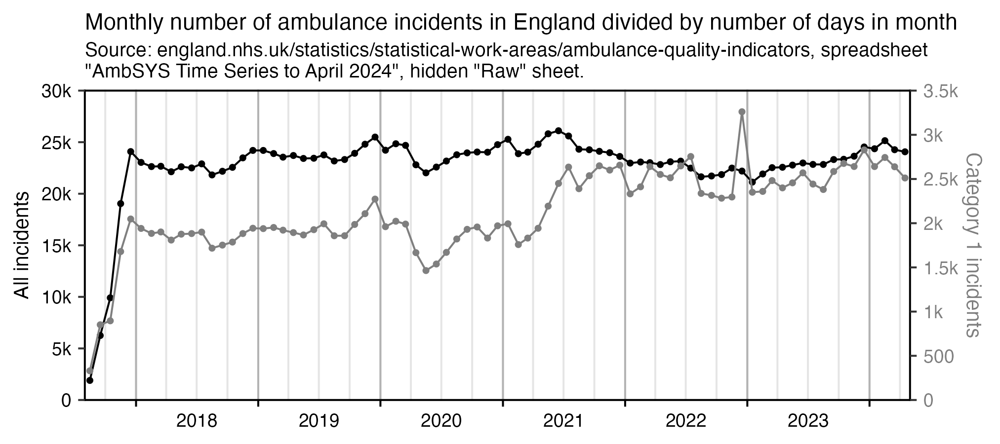
Around mid-2021 when there was a sharp increase in category 1 incidents, there was also a sharp decrease in category 3 incidents. So maybe there was some kind of a change in policy, so that for example they shifted part of category 3 incidents to category 2 and part of category 2 incidents to category 1:

However I didn't find any source which would've mentioned that there was any change in policy around mid-2021. For example a report published in August 2021 said that there had been an increase in category 1 incidents, but it didn't mention that the increase would've been because of any kind of a policy change: "The latest month's activity figures continue to highlight the intense pressure the ambulance service is facing. In June 2021, ambulance category one incidents increased by 8.1% since the previous month to 73,505 (5,523 more incidents). In comparison to a year ago, category one incidents have increased significantly by 62% (28,144 more incidents than June 2020). Compared to two years ago, before the pandemic, this is an increase of 27.2% (15,714 more incidents than June 2019) and overall activity has increased by 11.3%." [https://nhsproviders.org/rapid-response/introduction]
As an alternative explanation for why C3 incidents went down around the same time when C1 incidents went up, an increase in C1 incidents might have meant that ambulance services no longer had enough resources to respond to all C3 incidents, so they may have needed to adapt a more agressive triage policy that reduced the number of C3 incidents.
TheRustler83 posted this tweet: [https://x.com/TheRustler83/status/1799686665125929212]

However the table at the bottom didn't show the percentage of vaccinated people in the ONS dataset for mortality by vaccination status in England, but in the UKHSA flu and COVID-19 surveillance reports. But unvaccinated people are underrepresented in the ONS dataset, so it had only about 2-2.5% vaccinated people in elderly age groups in 2023:

library(colorspace)
t=read.csv("http://sars2.net/f/ons-table-2-2023-august.csv",na.strings=c("x","<3"))
t=t[t$cause=="Deaths involving COVID-19",]
t$date=sprintf("%d-%02d",t$year,match(t$month,month.name))
t$status[t$status!="Unvaccinated"]="Vaccinated"
a=aggregate(t[,c(6:7)],t[,c(1,4,5,12)],sum,na.rm=T)
m1=xtabs(dead~age+date,subset(a,status=="Unvaccinated"))/xtabs(dead~age+date,a)*100
m2=xtabs(pop~age+date,subset(a,status=="Unvaccinated"))/xtabs(pop~age+date,a)*100
pal=hex(HSV(c(210,210,210,160,110,60,30,0,0,0),c(0,.25,rep(.5,8)),c(rep(1,8),.5,0)))
pheatmap::pheatmap(m1,filename="i1.png",display_numbers=ifelse(is.na(m1),"NA",ifelse(m1>10,round(m1),sprintf("%.1f",m1))),
cluster_rows=F,cluster_cols=F,legend=F,cellwidth=17,cellheight=17,fontsize=9,fontsize_number=8,
border_color=NA,na_col="gray90",
number_color=ifelse(!is.na(m1)&m1>80,"white","black"),
breaks=seq(0,100,,256),
main="Percentage of COVID deaths in unvaccinated people",
colorRampPalette(pal)(256))
pheatmap::pheatmap(m2,filename="i2.png",display_numbers=ifelse(is.na(m2),"NA",ifelse(m2>10,round(m2),sprintf("%.1f",m2))),
cluster_rows=F,cluster_cols=F,legend=F,cellwidth=17,cellheight=17,fontsize=9,fontsize_number=8,
border_color=NA,na_col="gray90",
number_color=ifelse(m2>80,"white","black"),
breaks=seq(0,100,,256),
main="Percentage of person-years in unvaccinated people",
colorRampPalette(pal)(256))
m3=(m1/m2)/((100-m1)/(100-m2))
disp3=ifelse(m3<10,sprintf("%.1f",m3),round(m3))
m3=m3-1
max3=20
m3=ifelse(m3<0,1/m3*max3,m3)
pal2=colorRampPalette(hex(HSV(c(210,210,210,210,0,0,0,0,0),c(1,.8,.6,.3,0,.3,.6,.8,1),c(.3,.65,1,1,1,1,1,.65,.3))))(256)
pheatmap::pheatmap(m3,filename="i3.png",display_numbers=disp3,
cluster_rows=F,cluster_cols=F,legend=F,cellwidth=17,cellheight=17,fontsize=9,fontsize_number=8,
border_color=NA,na_col="gray90",
number_color=ifelse(!is.na(m3)&abs(m3)>.6*max3,"white","black"),
breaks=seq(-max3,max3,,256),
main="COVID mortality rate in unvaccinated people as multiple of vaccinated people",
colorRampPalette(pal2)(256))
sub="Source: ONS dataset \"Deaths by vaccination status, England\", table 2"
system("convert i[123].png -append 0.png")
system(paste0("f=0.png;mar=70;w=`identify -format %w $f`;convert \\( $f -gravity northeast -splice x20 \\) \\( -size $[w-mar]x -font Arial -interline-spacing -3 -pointsize 44 caption:'",sub,"' -extent $[w-mar]x -gravity south -splice x20 \\) -append 1.png"))
Jikkyleaks posted this tweet: [https://x.com/Jikkyleaks/status/1806280754600845529]
Please explain to me how people having received the RCT-based approved dose of product (2 doses that had 95% efficacy vs infection) did better than those that didn't, like I took a gene therapy for a donut.

However the mortality rate of people under the second dose shoots up when the healthy vaccinees get the third dose and the unhealthy strugglers remain under the second dose. At first people under the third
For example in the plot below which shows ages 80-89 from table 2 of the ONS spreadshee, October 2021 is the first month when a large number of people are included under the third dose, but in October 2021 people with three doses have about -65% excess mortality relative to the general population of England. As the negative excess mortality of people under the third dose gradually gets closer to zero, the positive excess mortality of people with two doses also returns closer to zero:

In the plot above if you look at people with two or more doses instead of only two doses, they continue to have lower CMR than the general population of England even after the third dose is rolled out.
Steve Kirsch posted this tweet: [https://x.com/stkirsch/status/1816909730717274405]
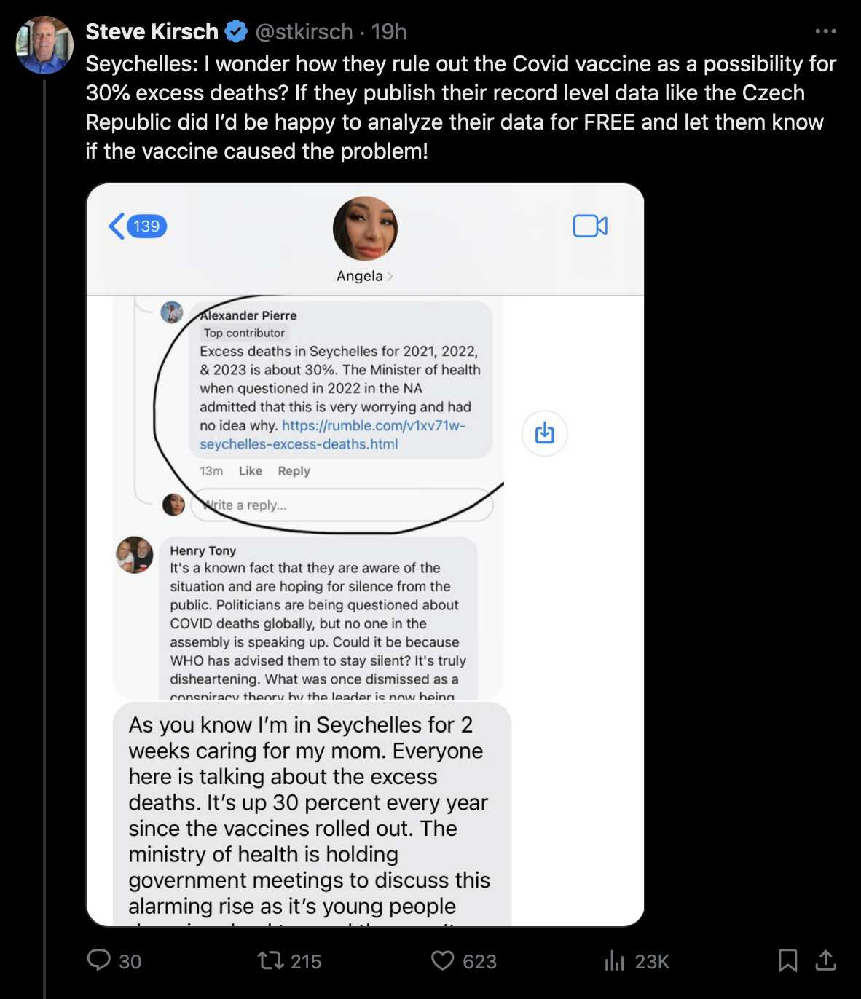
A README file for the World Mortality Dataset says that they got data for deaths in the Seychelles through "Email correspondence with Seychelles National Bureau of Statistics". [https://github.com/akarlinsky/world_mortality] Based on their data I got only about 3% excess deaths in 2021-2023 when I used the 2015-2019 linear trend as the baseline:
> t=fread("https://github.com/akarlinsky/world_mortality/raw/main/world_mortality.csv")
> t=t[country_name=="Seychelles",.(dead=sum(deaths)),year]
> t$trend=t[year<2020,predict(lm(dead~year),t)]
> t[,excesspct:=(dead/trend-1)*100]
> print(round(t),r=F)
year dead trend excesspct
2015 703 711 -1
2016 747 737 1
2017 748 762 -2
2018 818 788 4
2019 795 813 -2
2020 668 839 -20
2021 925 864 7
2022 941 890 6
2023 879 915 -4
> t[year>2020,(sum(dead)/sum(trend)-1)*100]
[1] 2.843655 # there's only about 3% total excess deaths in 2021-2023
Here's a plot of the same data:
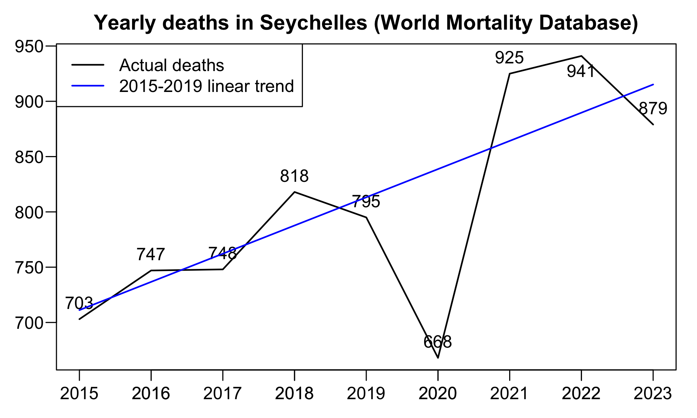
I thought that the Facebook post may have meant 30% excess deaths against a baseline of 2020, because in the code above I got about -20% excess deaths for 2020 but 7% for 2021 and 6% for 2022.
And in fact in the Rumble video which was linked in the post, a figure of 38.5% excess deaths in 2021 was calculated relative to a 2020 baseline: [https://rumble.com/v1xv71w-seychelles-excess-deaths.html]
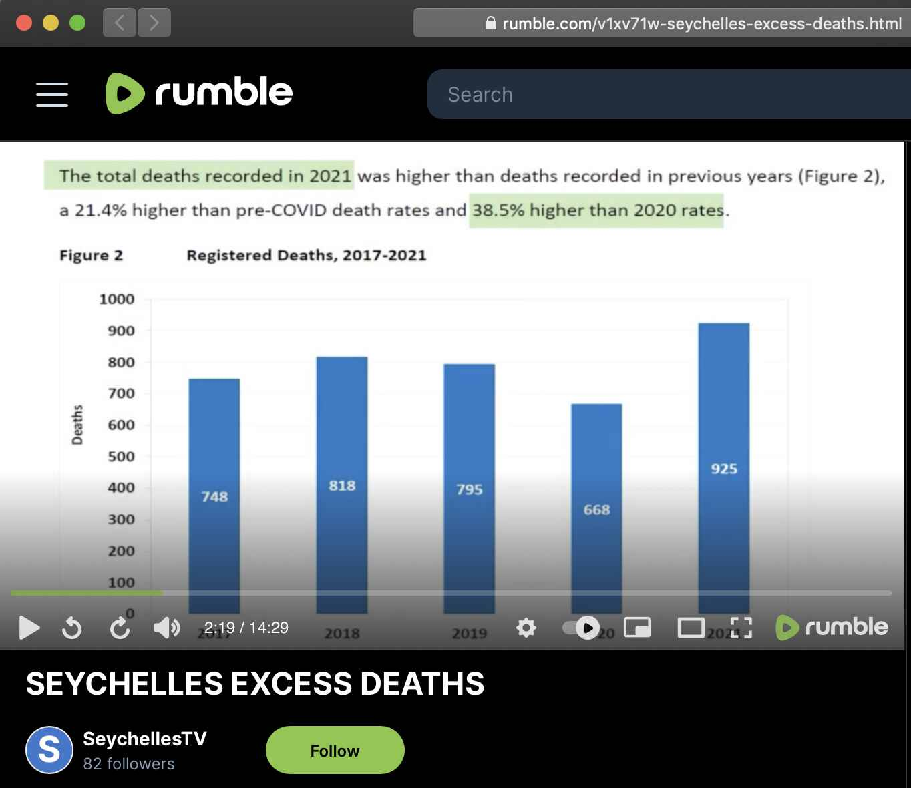
In the image above the figure of 21.4% seems to match a 2015-2019 average baseline: 925/((795+818+748+747+703)/5). But the years 2015 and 2016 were not included in the plot so you couldn't see clearly that there was an increasing trend in deaths per year before COVID, so the 2015-2019 average baseline exaggerated excess mortality in 2021.
Kirsch also posted this tweet: [https://x.com/stkirsch/status/1818772830026449411]
It looks like Henjin has better data for 2022: 941 deaths.
Seychelles 10 year avg (2011-2020) is 724
941/724=1.2997
which most people would say is a 30% increase above baseline which is what I heard from my friend who lives there.
However according to estimates from the UN's World Population Prospects dataset, the population size also increased by about 32% between 2011 and 2023. So a linear trend makes more sense than an average baseline:
> wpp=fread("https://population.un.org/wpp/Download/Files/1_Indicator%20(Standard)/CSV_FILES/WPP2024_PopulationByAge5GroupSex_Medium.csv.gz")
> wpp[Location=="Seychelles"&Variant=="Medium"&Time%in%2011:2023,.(pop=sum(PopTotal)*1000),.(year=Time)]|>print(r=F)
year pop
2011 97024
2012 99544
2013 102094
2014 104656
2015 107229
2016 109822
2017 112428
2018 115041
2019 117653
2020 120291
2021 122990
2022 125525
2023 127955
The excess deaths were also concentrated in two spikes which coincided with spikes in COVID deaths, but there was low excess mortality in the first quarter of 2021 when most vaccine doses listed by OWID were administered (even though I think OWID is missing booster doses):
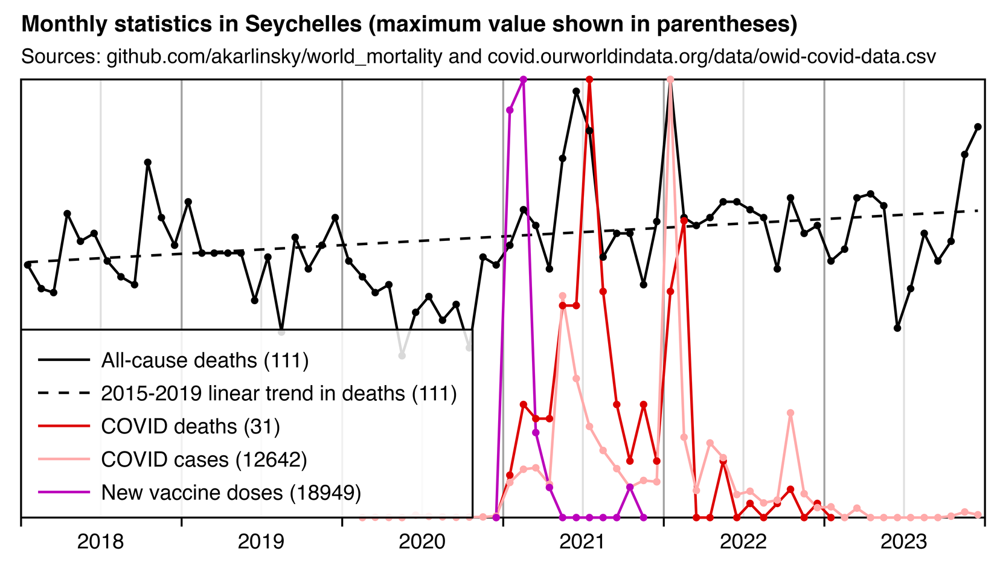